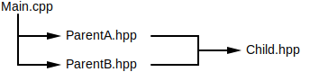
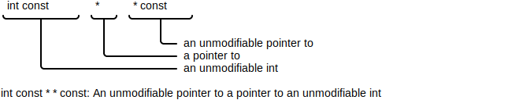
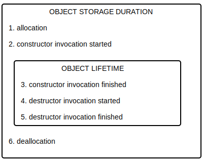
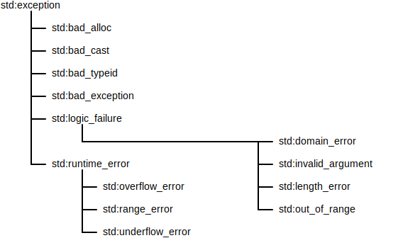
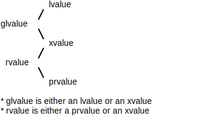
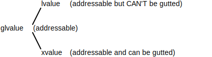
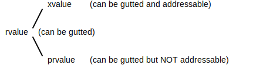
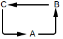
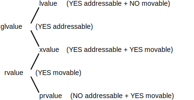

TODO: ch 9 at std::function / std::callable
TODO: C++20 coroutines section needs to be fleshed out better (no good source for this)
TODO: add section on equals/hashcode/tostring equivalents -- operator== overload -- std::hash template overload: https://en.cppreference.com/w/cpp/utility/hash -- friend function to ostringstream
TODO: streams
TODO: add terminology for declarations and definitions + add more example code into terminology
TODO: std::visit and overloaded { } -- add in a section for these, then go back and fix the std::variant section (and any other sections that can make use of it like std::vector) to refer to it (MOVE THE PIECES OUT OF STD::VARIANT SECTION INTO THE STD::VISIT -- USE SEEALSO TO REFERENCE IT) -- https://dev.to/tmr232/that-overloaded-trick-overloading-lambdas-in-c17 / https://dzone.com/articles/two-lines-of-code-and-three-c17-features-the-overl
TODO: figure out C++20 date time functionality
TODO: unnamed namespaces (https://en.cppreference.com/w/cpp/language/namespace)
TODO: std::formatter (INCLUDING the c++20 changes for std::format) https://en.cppreference.com/w/cpp/utility/format/formatter
This document is broken down into sections and sub-sections. To understand a specific section, you need to understand all of its parent sections as well as any prerequisites that it lists. For example, if section Fruits/Apples/Granny Smith has prerequisites Vegetables/Peas and Fish listed, you'll need to have read ...
Fruits (just that section, not its sub-sections)Fruits/Apples (just that section, not its sub-sections)Vegetables/Peas (that section and including ALL of its sub-sections)Fish (that section including ALL of its sub-sections)This is essentially a tree where each section is a node. To understand a node, you need to understand ...
The following document is my attempt at charting out the various pieces of the modern C++ landscape, focusing on the 80% of features that get used most of the time rather than the 20% of highly esoteric / confusing features. It isn't comprehensive and some of the information may not be entirely correct / may be missing large portions.
The key points of similarity to remember:
The key point of dissimilarity to remember:
🔍SEE ALSO🔍
The following are a base set of language constructs required for understanding the rest of the document.
The general purpose integral type is int.
Variables use the format modifiers type name initializer.
int a = 0;
int b (0); // parenthesis
int c {0}; // curly braces
C++ provides a bewildering number of ways to initialize a variable, each with its own set of edge cases. For best results, stick to the curly braces.
Functions use the format modifiers return-type name(param-type1 arg-name1, param-type2 arg-name2, ...) modifiers { body }.
int myFunction(int a) {
return x + a;
}
C++ functions don't necessarily have to be methods (members of a class).
Classes use either struct or class.
struct makes all members of the class public by default, while class makes them all private by default. Members need to be grouped together by visibility, where a visibility (e.g. private) is a label within the class.
class MyClass {
int myFunction(int a) {
return x + a;
}
private: // everything under this label is private
int x {0};
};
Source code often comes in pairs: A header file usually contains declarations (e.g. just the function's signature / prototype) while a C++ file usually contains definitions (e.g. the function implementation).
// MyCode.hpp (header file w/ declarations)
int myFunction(int a);
// MyCode.cpp (source file w/ definitions)
#include "MyCode.hpp"
int myFunction(int a) {
return x + a;
}
This isn't required. Source files may contain declarations and / or header files may contain definitions, but the split is typically done for a variety of reasons: faster compile times, sharing the same object across multiple source files, compiling when there are cyclical references, etc..
⚠️NOTE️️️⚠️
The above points aren't entirely correct or complete. They're generalizations that help set up a base for the explanations in the rest of the document.
The following is an example C++ program that prints "hello world" to stdout.
// hello.cpp file
#include <iostream>
int main() {
std::cout << "hello world\n";
return 0;
}
The ...
#include <iostream> pulls in a library that lets you interface with stdout, stderr, and stdin.int main() { ... } is the entry point of the program.std:cout << ... is what prints to stdout.return 0 returns from the main() function, ending the program with an exit code of 0.Pretty much any modern C++ compiler will compile the above code. The output below uses the GNU C++ compiler to compile the example, then runs the executable.
$ g++ hello.cpp
$ ./a.out
hello world
↩PREREQUISITES↩
Several C++ compilers exist, the most popular of which are the GNU C++ compiler and LLVM clang. C++ compilers generally follow the same set of steps to go from C++ code to an executable.
The C++ language has a lot of legacy baggage, edge cases, and ambiguous behaviour. Regardless of the compiler chosen, at least some of the following warning options should be enabled:
-Wall - Warns about questionable but easily avoidable constructs.-Wextra - Warns about other questionable constructs not covered by -Wall.-Wpedantic - Warns about ISO conformance.-Weverything - Turns on all warnings.Most compilers support some or all of the flags above.
⚠️NOTE️️️⚠️
A good online tool to try things in is cppinsights, which breaks down C++ code and allows you some visibility into what the compiler is doing / what the compiler sees.
↩PREREQUISITES↩
For each source code file that gets compiled, the compiler needs to know that the entities (variables, functions, classes, etc..) accessed within that file actually exist. The scope at which the compiler keeps track of these entities is per source code file. For example, imagine a source code file that defines a function named myFunction (definition). There are 5 other source code files that call myFunction at some point. Each of those 5 other files is required to tell the compiler what myFunction is (declaration) before it can invoke it.
One way to handle this scenario is to put myFunction's declaration in each source code file that calls it.
OtherClass myFunction(int a);
The problem with doing this is that ...
myFunction (e.g. myFunction requires OtherClass, which may require even more entities).The preferred way to handle this scenario is to put myFunction's declaration into a header file. Then, any file that needs to know about myFunction can use the #include directive.,,
// MyFunction.hpp
#include "OtherClass.hpp"
OtherClass myFunction(int a);
// UsageFile1.cpp
#include "MyFunction.hpp"
myFunction(44);
If an entity is declared once already by an #include, it shouldn't be declared again. For example, imagine that the file Main.cpp includes ParentA.hpp and ParentB.hpp. Both ParentA.hpp and ParentB.hpp then go on to include Child.hpp....

The problem the above example scenario creates is that Child.hpp gets #include'd twice, meaning that everything in it is declared twice. To mitigate this problem, an include guard is typically provided in each header file.
// MyFunction.hpp
#ifndef MY_FUNCTION_H // include guard
#define MY_FUNCTION_H
#include "OtherClass.hpp"
OtherClass myFunction(int a);
#endif
⚠️NOTE️️️⚠️
#ifdef, #define, and #endif are preprocessor macros that aren't covered here. Look them up online if you need to.
You may notice that sometimes #include puts quotes around the files and sometimes angle brackets. Use quotes when the files are in the same directory structure, angle brackets when the files are coming from some external library.
#include <vector> // library header
#include "OtherClass.hpp" // local header
↩PREREQUISITES↩
There are many different compilers, IDEs, build systems, and dependency managers for C++.
Common compilers:
Common IDEs:
Common build systems:
⚠️NOTE️️️⚠️
CMake isn't a build system itself, but a tool that generates the configuration needed for build systems. The idea is that, since C++ code can be compiled on many different platforms and build systems, this high-level tool can be used to generate the configuration for those build systems. For example, building on Linux is commonly done using Make while on Windows it's commonly done through Microsoft Visual Studio IDE project files. CMake can configure both using the same CMake script.
Common dependency managers:
Of the tools above, the best mixture I've found so far is to use ...
apt install clang-12)snap install --classic code)apt install cmake)There are basic guides / tutorials for each of these tools available online. With the C++ extensions (5, 6, and 7), vscode (3) works similar to a professional IDE. It will parse a CMake configuration (3) to figure out how the code should be built as well as to provide C++ intellisense / auto-complete / formatting / debugging / etc.. support. Conan (4) integrates with CMake, so intellisense and builds through vscode automatically include the libraries.
⚠️NOTE️️️⚠️
Make sure to turn off the C++ extension's intellisense support or else it'll interfere with clangd's superior intellisense support. You can do this by adding the following to your .vscode/settings.json file...
{
"C_Cpp.intelliSenseEngine": "Disabled",
"C_Cpp.autocomplete": "Disabled", // So you don't get autocomplete from both extensions.
"C_Cpp.errorSquiggles": "Disabled", // So you don't get error squiggles from both extensions (clangd's seem to be more reliable anyway).
}
⚠️NOTE️️️⚠️
Make sure that you don't have other C++ extensions installed. I'd initially installed a Makefile plugin into vscode that was tripping up the CMake plugin and breaking my intellisense.
Assuming you have all the software above installed, this cookie cutter template can be used to set up a simple project structure that you can open directly in vscode. The template primes the project by ...
src/main).src/test).⚠️NOTE️️️⚠️
I keep reading that globs aren't recommended in CMake. If you don't use globs, you'll have to go in and manually add in each source file into the CMake configuration.
⚠️NOTE️️️⚠️
Recall that ...
Conan changes ARE NOT automatically picked up. You need to re-run conan (from ./build -- see the cookie cutter template post hook) to pick up any library changes.
↩PREREQUISITES↩
The following subsection loosely details core C++ language features. It isn't comprehensive and some of the information may not be entirely correct / may be missing large portions.
The following is a list of operators available in C++. Some operators are obvious, while others are explained in other sections.
Bitwise Logical Operators
| Name | Example | Note |
|---|---|---|
Bitwise AND (&) |
0b1011 & 0b0110 |
|
Bitwise OR (|) |
0b1011 | 0b0110 |
|
Bitwise XOR (^) |
0b1011 ^ 0b0110 |
|
Bitwise NOT (~) |
~0b1011 |
|
Bitwise left-shift (<<) |
0b1011 << 2 |
|
Bitwise right-shift (>>) |
0b1011 >> 2 |
Results on signed may be different than unsigned. |
Boolean Logical Operators
| Name | Example | Note |
|---|---|---|
Logical AND (&&) |
true && true |
|
Logical OR (||) |
true || false |
|
Logical NOT (!) |
!true |
Arithmetic Operators
| Name | Example | Note |
|---|---|---|
Unary Plus (+) |
+10 |
|
Unary Minus (-) |
-10 |
|
Addition (+) |
1 + 2 |
|
Subtraction (-) |
2 - 1 |
|
Multiplication (*) |
2 * 3 |
|
Division (/) |
6 / 2 |
|
Modulo (%) |
6 % 4 |
There are implicit rules for how fundamental types get promoted. The general rule of thumb is that the result of the operator is promoted to the operand with the "greater" type. For example, if an int is added to a float, the result will be a float.
These rules are similar to those in other languages (e.g. Java and Python).
⚠️NOTE️️️⚠️
If confused, use type deduction via the auto keyword: auto x {5 + y}, then check to see what the type of y is in the IDE or using typeid.
Assignment Operators
| Name | Example | Note |
|---|---|---|
Assignment (=) |
x = 5 |
|
Assignment Bitwise AND (&=) |
x &= 0b0110 |
|
Assignment Bitwise OR (|=) |
x |= 0b0110 |
|
Assignment Bitwise XOR (^=) |
x ^= 0b0110 |
|
Assignment Bitwise left-shift (<<=) |
x <<= 2 |
|
Assignment Bitwise right-shift (>>=) |
x >>= 2 |
Result on signed may be different than unsigned. |
Assignment Addition (+=) |
x += 2 |
|
Assignment Subtraction (-=) |
x -= 1 |
|
Assignment Multiplication (*=) |
x *= 3 |
|
Assignment Division (/=) |
x /= 2 |
|
Assignment Modulo (%=) |
x %= 4 |
|
Increment (++) |
x++ |
Applicable BEFORE or AFTER the operand: ++x returns the value AFTER modification, x++ returns the value BEFORE modification. |
Decrement (--) |
x-- |
Applicable BEFORE or AFTER the operand: --x returns the value AFTER modification, x-- returns the value BEFORE modification. |
All assignment operators work similar to those in Java except for the increment and decrement operators. Due to the confusion it causes, Java disallows the increment / decrement from returning a value, meaning that it can't be used in an expression. Not so in C++. In addition to modifying the variable passed as the operand, in C++ these operators also return a result, meaning that it's okay to increment / decrement operator within some larger expression.
int x {3};
int y {(x++) + 2};
// at this point, x is 4, y is 5
int a {3};
int b {(++a) + 2};
// at this point, a is 4, b is 6
⚠️NOTE️️️⚠️
You probably shouldn't do this because it gets confusing. Also, incrementing/decrementing the same variable more than once in the same expression isn't defined behaviour: The order of incrementing/decrementing can change based on whatever the compiler thinks is best, meaning that the results won't be consistent across different platforms / compilers / compiler options / etc...
Comparison Operator
| Name | Example | Note |
|---|---|---|
Equal To (==) |
5 == 7 |
|
Not Equal To (!=) |
5 != 7 |
|
Less Than (<) |
5 < 7 |
|
Less Than Or Equal To (<=) |
5 <= 7 |
|
Greater Than (>) |
5 > 7 |
|
Greater Than Or Equal To (>=) |
5 >= 7 |
|
Three-way Comparison (<=>) |
5 <=> 7 |
Returns a special ordering type, not boolean (discussed in spaceship operator section). |
In addition, the ternary conditional operator is a pseudo operator that takes in 3 operands similar to those found in other high-level languages: CONDITION ? EXPRESSION_IF_TRUE : EXPRESSION_IF_FALSE. It's essentially a shorthand if-else block.
int x {n % 7 == 1 ? 1000 : -1000};
// equiv to...
if (n % 7 == 1) {
x = 1000;
} else {
x = -1000;
}
Member Access Operators
| Name | Example | Note |
|---|---|---|
Subscript ([]) |
x[0] |
|
Indirection (*) |
*x |
Doesn't conflict with arithmetic multiplication operator because this is a unary operator. |
Address Of (&) |
&x |
|
Member Of Object (.) |
x.member |
|
Member Of Pointer (->) |
x->member |
These operators are used in scenarios that deal with accessing the members of an object (e.g. element in an array, field of a class) or dealing with memory addresses / pointers. The subscript and and member of object operators are similar to their counterparts in other high-level languages (e.g. Java, Python, C#, etc..). The others are unique to languages with support for lower-level programming like C++. Their usage is detailed in other sections.
Dynamic Object Operators
| Name | Example | Note |
|---|---|---|
Create Dynamic Object (new) |
new int |
|
Create Dynamic Array (new[]) |
new int[50] |
|
Destroy Dynamic Object (delete) |
delete x |
|
Destroy Dynamic Array (delete[]) |
delete[] x |
⚠️NOTE️️️⚠️
If you already know about dynamic objects and arrays and constructors/destructors, make sure you delete an array using delete[]. It makes sure to call the destructor for each element of the array.
Size Operator
| Name | Example | Note |
|---|---|---|
Size (sizeof) |
sizeof x] |
This operator gets the size of an object in bytes. Note that an object's byte size may not be indicative of the da may include padding required by the platform (e.g. an object requiring 5 bytes may get expanded to 8 bytes because the platform requires 8 byte boundary alignments).
Other Operators
C++ provides a set of other operators such as the ...
,).())._)While it isn't worth going into them in detail here, the reason the language explicitly lists them as operators is because they're overload-able (e.g. operator overloading). Overloading these operators is heavily discouraged since doing so causes confusion.
⚠️NOTE️️️⚠️
The book mentions the comma operator specifically. It doesn't look like this is used for much and the book recommends against using it for anything (e.g. operator overloading) due to the confusion it causes. This gives off similar vibes to Python's tuple syntax, where you can pass an unenclosed tuple as a subscript to something. When I was learning Python, that also came off as very confusing.
x = obj['column name', 100]
↩PREREQUISITES↩
C++ variable declarations have the following form: modifiers type name initializer.
type (required) - Type of variable.
name: (required) - Name of variable.
initializer: (optional) - Initial value to assign (object initialization).
There are multiple ways to initialize a variable, each with their own advantages and disadvantages.
int x {a + b}).int x = 5).int x = { a + b }).⚠️NOTE️️️⚠️
The above is an over-simplification. The ways to initialize are vast and complex. See here for a full accounting and here for an hour long talk about the edge cases.
It seems like the safest bet is to always use brace initialization where possible. Just use the braces as if they were parentheses or braces in Java (specific to the context). The others have surprising behaviour (e.g. they won't warn about narrowing conversions).
modifiers (optional) - Markers controlling the behaviour / properties of a variable.
(e.g. const, volatile, constexpr, inline, ...)
int a; // no initializer -- garbage possibly contained at memory location
int b {}; // empty initializer -- zeros out the memory for the int
int c {0}; // assign to constant 0
int d {c}; // assign to value in c
In C++, variables that are fields (assigned to a class) are called member variables. This section deals with non-member variables (e.g. scoped somewhere other than a class -- global, inside a function, etc..).
↩PREREQUISITES↩
The following sections list out core C++ types and their analogs. These include numeric types, character types, and string types.
C++'s core integer types are as follows...
short intintlong intlong long intThe above integer types come in two forms: signed and unsigned. The range of ...
By default, the integer types above are signed (speculation). Signed-ness can be explicitly stated by prefixing either signed or unsigned to the type, but if the type is signed the prefix is usually omitted.
| signed | unsigned |
|---|---|
short int / signed short int |
unsigned short int |
int / signed int |
unsigned int |
long int / signed long int |
unsigned long int |
long long int / signed long long int |
unsigned long long int |
Integer types char int, short int, long int, and long long int can optionally omit the int keyword.
| signed | unsigned |
|---|---|
short / signed short |
unsigned short |
int / signed int |
unsigned int |
long / signed long |
unsigned long |
long long / signed long long |
unsigned long long |
The only guarantees for core integer types are that ...
short >= range of int).All other specifics are platform-dependent. Specifically, ...
Integer ranges, although platform-specific, are queryable in the climits header.
| type | min | max |
|---|---|---|
signed short |
SHRT_MIN |
SHRT_MAX |
signed int |
INT_MIN |
INT_MAX |
signed long |
LONG_MIN |
LONG_MAX |
signed long long |
LLONG_MIN |
LLONG_MAX |
unsigned short |
0 |
USHRT_MAX |
unsigned int |
0 |
UINT_MAX |
unsigned long |
0 |
ULONG_MAX |
unsigned long long |
0 |
ULLONG_MAX |
By default, literals are represented using base10. Literals may be presented in different bases via the prefix.
| base | literal prefix | example |
|---|---|---|
| 2 (binary) | 0b | 0b1111 |
| 8 (octal) | 0 | 016 |
| 10 (decimal) | 15 |
|
| 16 (hex) | 0x | 0xF |
Integer literals are targeted to specific integer types by their suffix.
| type | literal suffix | example |
|---|---|---|
signed short |
||
signed int |
||
signed long |
L | 2L |
signed long long |
LL | 2LL |
unsigned short |
||
unsigned int |
U | 2U |
unsigned long |
UL | 2UL |
unsigned long long |
ULL | 2ULL |
⚠️NOTE️️️⚠️
Notice that int, short, and unsigned short don't have explicit suffixes. If no suffix is present, it's an int (speculation). To get it to a short, the easiest way is to cast it: (short) 2.
⚠️NOTE️️️⚠️
See also std::numeric_limits in the limits header. This seems to also provide platform-specific definitions that are queryable via functions..
Integer types with standardized bit lengths are defined in the cstdlib header.
| signed | unsigned | description |
|---|---|---|
intmax_t |
uintmax_t |
widest possible bit length |
int8_t |
uint8_t |
exactly 8 bits |
int16_t |
uint16_t |
exactly 16 bits |
int32_t |
uint32_t |
exactly 32 bits |
int64_t |
uint64_t |
exactly 64 bits |
int_least8_t |
uint_least8_t |
8 bits or greater |
int_least16_t |
uint_least16_t |
16 bits or greater |
int_least32_t |
uint_least32_t |
32 bits or greater |
int_least64_t |
uint_least64_t |
64 bits or greater |
int_fast8_t |
uint_fast8_t |
8 bits or greater |
int_fast16_t |
uint_fast16_t |
16 bits or greater |
int_fast32_t |
uint_fast32_t |
32 bits or greater |
int_fast64_t |
uint_fast64_t |
64 bits or greater |
intptr_t |
uintptr_t |
wide enough to hold a void * |
size_t |
wide enough to hold the maximum number of bytes of something in memory |
The minimum and maximum extents of each type are defined in {TYPE}_MIN and {TYPE}_MAX, where {TYPE} doesn't include the _t suffix. For example the maximum value an uint64_t can be is UINT64_MAX.
⚠️NOTE️️️⚠️
Not all types guaranteed to be present (e.g. 64-bit types may be missing if the platform can't support it). Unsigned types don't have a minimum extent defined because a minimum of any unsigned integer type is always 0 (e.g. uint64_t can't go any lower than 0).
To expand any integer literal to a ...
intmax_t, use the macro INTMAX_C(...).uintmax_t, use the macro UINTMAX_C(...).int{N}_t, use the macro INT{N}_C(...) (where {N} is the bit length).uint{N}_t, use the macro UINT{N}_C(...) (where {N} is the bit length).⚠️NOTE️️️⚠️
There is no macro SIZE_C(...) for size_t. Best to just assign a `size_t to one of the other types's literals and hope the compiler warns about any narrowing conversions that might happen.
⚠️NOTE️️️⚠️
What's the point of the above? You don't know what internal integer type each standardized type maps to. For example, uint64_t may map to unsigned long long, which means when you want to assign a literal to a variable of that type you need to add a ULL suffix...
uint64_t test {9999999999999999999ULL}
The macros above make it so that you don't need to know the underlying mapping...
uint64_t test {UINT64_C(9999999999999999999)}
⚠️NOTE️️️⚠️
See also std::numeric_limits in the limits. This seems to also provide platform-specific definitions that are queryable via functions..
C++'s core floating point types are as follows...
| type | description | literal suffix | example |
|---|---|---|---|
float |
single precision | f |
123.0f |
double |
double precision | 123.0 |
|
long double |
extended precision | L |
123.0L |
The specifics of each type are platform-dependent. The only guarantee is that each type has to hold at least the same range as the type before it (e.g. double's range should cover float's range). Other than that, ...
Floating point characteristics, although platform-specific, are queryable in the cfloat header.
| type | min | max | min exponent | max exponent | mantissa digits | radix | epsilon |
|---|---|---|---|---|---|---|---|
float |
FLT_MIN |
FLT_MAX |
FLT_MIN_EXP |
FLT_MAX_EXP |
FLT_MANT_DIG |
FLT_RADIX |
FLT_EPSILON |
double |
DBL_MIN |
DBL_MAX |
DBL_MIN_EXP |
DBL_MAX_EXP |
DBL_MANT_DIG |
DBL_RADIX |
DBL_EPSILON |
long double |
LDBL_MIN |
LDBL_MAX |
LDBL_MIN_EXP |
LDBL_MAX_EXP |
LDBL_MANT_DIG |
LDBL_RADIX |
LDBL_EPSILON |
⚠️NOTE️️️⚠️
Mantissa digits is the number of digits (of the base specified in radix) that the floating point type uses (speculation).
Epsilon is the difference between 1 and the floating point number just before 1.
⚠️NOTE️️️⚠️
The sizeof operator should NOT be used to infer limits / characteristics of a floating point type. For example, a sizeof(long double) 16 doesn't necessarily mean that the type is a quadruple precision float (128-bit). Rather, it's likely that the floating point type has less precision but the platform requires padding.
The rounding behaviour of all floating point types is queryable via FLT_ROUNDS, where a ...
The floating point evaluation behaviour is queryable via FLT_EVAL_METHOD, where a ...
⚠️NOTE️️️⚠️
Unsure about the last point. How's the last point any different than -1?
⚠️NOTE️️️⚠️
I see online that FLT_DIG, DBL_DIG, LDBL_DIG, and DECIMAL_DIG define the number of "decimal digits" that can be converted to floating point and back without a loss in precision. I'm assuming that just means the max number of digits that can be represented in a float where exp is 1?
⚠️NOTE️️️⚠️
See also std::numeric_limits in the limits header. This seems to also provide platform-specific definitions that are queryable via functions..
↩PREREQUISITES↩
Core C++ strings are represented as an array of characters, where that array ends with a null character to signify its end. This is in contrast to other major platforms that typically structure strings a size integer along with the array (no null terminator).
Individual characters all map to integer types, where literals are defined by wrapping the character in single quotes. Even though they're integers, the signed-ness of each of the types below isn't guaranteed.
| type | bits | literal prefix | example | description |
|---|---|---|---|---|
char |
>= 8 | 'T' |
>= 8-bit wide character (smallest unit of memory -- 1 byte) | |
char16_t |
16 | u |
u'T' |
16-bit wide character (e.g. UTF-16) |
char32_t |
32 | U |
U'T' |
32-bit wide character (e.g. UTF-32) |
wchar_t |
L |
L'T' |
at least as wide as char |
Note that char and wchar_t don't have predefined bit lengths. They are platform-dependent. The bit length for...
char is defined in CHAR_BIT of climits and must be at least 8 bits.wchar_t must be equal to or greater than that of char.⚠️NOTE️️️⚠️
char literals can also be integers, but the signed-ness of the char type isn't defined by default (speculation). It can specifically be made to be signed / unsigned by prefixing it as such: signed char / unsigned char.
Strings literals are wrapped in double quotes instead of single quotes, where they get transformed into an array terminated by a null character.
| type | literal prefix | example | description |
|---|---|---|---|
char * |
"hello" |
unknown encoding (platform specific?) | |
wchar_t * |
L |
L"hello" |
unknown encoding (platform specific?) |
char16_t * |
u |
u"hello" |
encoded as UTF-16 |
char32_t * |
U |
U"hello" |
encoded as UTF-32 |
char8_t * |
u8 |
u8"hello" |
encoded as UTF-8 |
Typically escaping rules apply to string literals. Unescaped string literals are allowed by adding an R at the end of the literal prefix, which make it so that the ...
These delimiter characters are characters that aren't encountered in the contents of the string itself. For example, in u8R"|hello|", the delimiter is | and isn't included in the resulting UTF-8 string.
void is a type that represents an empty set of values. Since it can't hold a value, C++ won't allow you to declare an object of type void. However, you can use it to declare that a function ...
void return).void parameter list).↩PREREQUISITES↩
C++ allows for the creation of arrays of constant length (size of the array must be known at compile-time). Elements of an array are guaranteed to be contiguous in memory (speculation).
int x[100] - Creates an array of 100 ints where those 100 ints are junk values (data previously at that memory location is not zeroed out).int x[] { 5, 5, 5 } - Creates an array of 3 ints where each of those ints have been initialized to 5 (braced initialization).int x[] = { 5, 5, 5 } - Equivalent to above (assignment does not do any extra work).int x[3] {} - Creates an array of 3 ints where each of those ints are 0 (memory zeroed out -- braced initialization).int x[3] = {} - Equivalent to above (assignment does not do any extra work).int x[n] - Disallowed by C++ if n isn't a constant. These types of arrays are allowed in C (called variable length arrays / VLA), but not in C++ because C++ has collection classes that allow for sizes not known at compile-time.Accessing arrays is done similarly to how it is in most other languages, by subscripting (e.g. x[0] = 5). The only difference is that array access isn't bounds-checked and array length information isn't automatically maintained at run-time. For example, if an array has 100 elements, C++ won't stop you from trying to access element 250 -- out-of-bounds array access is undefined behaviour.
One way to think of an array is as a pointer to a contiguous block of elements of the array type. In fact, if an array type gets used where it isn't expected, that array type automatically decays to a pointer type.
int test(int *x) {
return x[0] + x[1];
}
void run() {
int x[3] = { 1, 2, 3 };
int y { test(x) };
}
⚠️NOTE️️️⚠️
My understanding is that arrays are typically passed to functions as pointers + array length. This is because the array length information is only available at compile-time, meaning that if you have a function that takes in an array, how would it know the size of the array it's working with when it runs (it isn't the one who declared it). It looks like a function parameter can be an array type of fixed size, but apparently that doesn't mean anything? The compiler doesn't enforce that a caller use an array of that fixed size, and using sizeof on the array will produce a warning saying that it's decaying into a pointer.
size_t test(int x[10]) {
return sizeof(x); // compiler warning that this is returning sizeof(int *)
}
int main() {
int x[3] = { 1, 2, 3 };
size_t y { test(x) }; // compiler doesn't complain that test() expects int[10] but this is int[3]
cout << y;
return 0;
}
Be careful when using the sizeof operator on an array. If the type is the original array type, sizeof will return the number of bytes taken up by the elements of that array (known at compile-time). However, if the type has decayed to a pointer type, sizeof will return the number of bytes to hold on to a pointer.
int x[3];
int *y {x}; // equiv to setting to &(x[0]);
cout << sizeof x; // should be the size of 3 ints
cout << sizeof y; // should be the size of a pointer
Similarly, range-based for loops won't work if the type has decayed to a pointer type because the array size of that pointer isn't known at compile-time.
int x[3] = {1,2,3};
int *y {x};
for (int i {0}; i < 3; i++) { // OK
cout << y[i] << endl;
}
for (int v : x) { // OK
cout << v << endl;
}
for (int v : y) { // ERROR
cout << v << endl;
}
You may be tempted to use sizeof(array) / sizeof(type) to determine the number of elements within an array. It's a better idea to use std::size(array) instead (found in the iterator header) because it should have logic to workaround and platform-specific behaviours that might cause inconsistent results / unexpected behaviour (speculation).
↩PREREQUISITES↩
C++ provides types that reference a memory address, called pointers. Variables of these types can point to different memory addresses / objects.
Adding an asterisk (*) to the end of any type makes it a pointer type (e.g. int * is a type that can contain a pointer to an int). A pointer to any object can be retrieved using the address-of unary operator (&). Similarly, the value in any pointer can be retrieved using the dereference unary operator (*).
int w {5};
int *x { &w }; // x points to w
int *y { &w }; // y points to w
int z { *x }; // z is a copy of whatever x points to, which is w, which means it gets set to 5
*x = 7; // w is set to 5 through x
int **a { &x }; // a points to x, which points to w (a pointer to a pointer to an int)
As shown in the example above, it's perfectly valid to use the dereference operator on the left-side of the equals. It defines where the result of the right side should go.
int w {5};
int *x { &w }; // x points to w
int **y { &x }; // y point to x, which points to w
**y = 7; // y dereferenced twice and set to 7 -- w should now be 7
The notation is confusing because asterisk (*) has different meanings. In the context of a ...
⚠️NOTE️️️⚠️
See also: member-of-pointer operator.
In addition, a pointer can optionally be set to nothing via the nullptr literal. nullptr is actually of type std::nullptr_t, but the compiler will implicit conversion to/from other pointer types when required.
int *y { nullptr }; // implicit conversion
if (y == nullptr) {
// report error
}
⚠️NOTE️️️⚠️
It seems like there's some implicit conversions to boolean that are possible with pointers. If whatever the pointer is going to expect a boolean, it's implicitly converted to ptr != nullptr? So in if / while/ for conditions, you can just use the pointer as is without explicitly writing out a condition?
⚠️NOTE️️️⚠️
How is this different than the NULL macro? I guess because it's a distance type, you can have a function overload that takes in param of type std::nullptr_t? But why would you ever want to do that?
↩PREREQUISITES↩
Certain arithmetic operators are allowed on pointers, called pointer arithmetic. Adding or subtracting integer types on a pointer will move that pointer by the number of bytes that makes up its underlying type.
int []x = {1, 5, 7};
int *ptrA { &(x[1]) }; // points to idx 1 of x (5)
int *ptrB { ptrA + 1 }; // points to idx 2 of x (7)
This is similar to array access via the subscript operator. In fact, both arrays and pointers can be accessed in the same way using the subscript operator and pointer arithmetic.
int x[] { 1, 2, 3, 4, 5, 6, 7, 8, 9 };
int *y {x};
*(y+1) = 99; // equivalent to x[1] = 99
x[2] = 101; // equivalent to *(y+2) = 101;
⚠️NOTE️️️⚠️
An array guarantees that its elements appear contiguously and in order within memory (I think?), so if the pointer is from a decayed array, using pointer arithmetic to access its elements is perfectly fine.
A pointer to the void type means that the type being pointed to is unknown. Since the type is unknown, dereferencing a void pointer isn't possible. In other words, it isn't possible to read or write to the data pointed to by a void * because the underlying type is void / unknown.
int x[] { 1, 2, 3, 4, 5, 6, 7, 8, 9 };
void *y { x };
*y = 2; // fails
Since the underlying type of the pointer is unknown, pointer arithmetic isn't allowed either.
int x[] { 1, 2, 3, 4, 5, 6, 7, 8, 9 };
void *y { x };
y = y + 2; // fails
⚠️NOTE️️️⚠️
If you have a void * and you want to do raw memory manipulation at that address, use a std::byte * instead. Why not just use char * instead? Is a char guaranteed to be 1 byte (I think it is)? According to this, it's because certain assumptions about chars may not hold with bytes? I don't know. Just remember std::byte * if you're working with raw data.
↩PREREQUISITES↩
A pointer to a function means the type being pointed to is a function with some specific structure. All functions have a type associated with them, defined by their return type, parameter type, and owning class if the function is a method.
// type is: int (int, int)
int add(int a, int b) {
return a + b;
}
To declare a function pointer to a free function or a static class method, write out the function type (return type and parameter list without names) but place the pointer name preceded by an asterisk (*) wrapped in parenthesis where the function name would be. Invoke it just like you would any other function.
int (*func_ptr)(int, int) {}; // unset pointer to a function of structure int (int, int)
int add(int a, int b) {
return a + b;
}
int multiply(int a, int b) {
return a * b;
}
func_ptr = &add; // point func_ptr to address of add()
func_ptr(1, 2); // invoke
To declare a function pointer to a non-static class method (member function), the class type needs to be included before the asterisk (*) using the scoped resolution operator (::).
int (MyClass::*func_ptr)(int, int) {}; // unset pointer to a function of structure int (int, int) in or inherited from MyClass
MyClass x {};
func_ptr { &MyClass::multiply }; // point to: int MyClass::multiply(int, int)
(x.*func_ptr)(2, 3); // provide x as the MyClass instance when invoking
Unlike normal functions, functors cannot be assigned to raw function pointers. A functor's equivalent of a function pointer is a pointer to the function-call operator overload (method).
int (MyFunctor::*func_ptr)(int, int) {}; // unset pointer to a function of structure int (int, int) in or inherited from MyClass
MyFunctor x {};
func_ptr { &MyFunctor::operator() };
(x.*func_ptr)(2, 3); // provide x as the MyClass instance when invoking
Alternatively, to support both functions and functors, the parameter expecting a function pointer should be changed to the std::function or the code doing the invocation should be changed to use the std::invoke wrapper. These wrappers abstract away the differences between pointers to functions and functors.
↩PREREQUISITES↩
C++ provides a more sanitized version of pointers called references. A reference type is declared by adding an ampersand (&) after the type rather than an asterisk (*), and it implicitly takes the address of whatever is passed into it when it's created.
int w {5};
int *x { &w }; // x points to w
int &y { w }; // y references to w (note address-of operator not used here)
The main difference between pointer types and reference types is that a reference type doesn't need to explicitly dereference to access the object pointed to. The object pointed to by the reference type is accessed as if it were the object itself.
*x = 10; // x explicitly dereferenced to w and set to 10
y = 15; // y implicitly dereferenced to w and set to 15
As shown in the example above, assignment to a reference type is assignment on the underlying object being referenced. As such, having the reference type point to a different object isn't possible (reseating).
⚠️NOTE️️️⚠️
One way to think of this is that it's implicitly const -- the compiler won't let you explicitly set a reference to be const.
Similarly, it's not possible to have a reference to a reference.
int &&z { y }; // this isn't a thing -- fail
An rvalue reference is similar to a reference except that it tells the compiler that it's working with an rvalue. Rvalue references are declared by adding two ampersands (&&) after the type rather than just one. It's initialized using the std::move() function within the utility header, which casts its input into an rvalue reference.
Rvalue references are typically used for moving objects (not copying, but actually moving the guts of one object into another). This is typically done through something called a move constructor, which will be explained further on.
MyObject a {};
MyObject &&b { std::move(a) }; // get rvalue reference
MyObject c {b}; // move a into c (gut it into c) via the move constructor
// b is in an invalid state
⚠️NOTE️️️⚠️
Once an object is moved, it's in an invalid state. The only two reliable operations you can perform on it is to either destroy or re-assign it to something else (assignments are discussed elsewhere).
🔍SEE ALSO🔍
↩PREREQUISITES↩
sizeof is a unary operator that returns the size of its operand in bytes as a size_t type. If the operand is a ...
data type or a variable, it'll return the number of bytes needed to hold that type. For example, ...
sizeof char is guaranteed to be 1.sizeof (char &) is guaranteed to be 1.sizeof (char *) is platform dependent, typically either 4 or 8.char * x { "hi" }; sizeof x is equivalent to sizeof (char *) (see above).an expression such as a structure/class literal, array literal, or string literal, it'll return the number of bytes needed to hold it. For example, ...
sizeof "hi" is 3 (added 1 for the null terminator at the end)
sizeof { 5, 5, 4 } is platform dependent, typically either 12 or 24.
sizeof (int[3]) is platform dependent, typically either 12 or 24.
x = int[n]; sizeof x is invalid C++ (variable length arrays allocated on stack are not allowed in C++).
In other words, sizeof returns the size of things known at compile-time. If a variable is passed in, it outputs the size of the data type. For example, if the data type is a struct of type MyStruct, it'll return the number of bytes used to store a MyStruct. However, if the data type is a pointer to MyStruct, it'll return the number of bytes to hold that pointer. That is, you can't use it to get the size of something like a dynamically allocated array of integers.
In certain cases, the compiler may add padding to objects (e.g. byte boundary alignments or performance reasons), meaning that the size returned by sizeof for an object shouldn't be used to make inferences about the characteristics of that object. For example, a long double may get reported as being 16 bytes, but that doesn't necessarily mean that a long double is a 128-bit quad floating point. It could be that only 12 of those bytes are used to represent the floating point number while the remainder is just padding for alignment reasons.
⚠️NOTE️️️⚠️
As shown in the examples above, the sizeof a C++ reference is equivalent to the raw size. For example, sizeof char == sizeof (char &).
⚠️NOTE️️️⚠️
The last example is valid in C99 (called a VLA -- variable length array) but not C++. The reason is C++ has std::vector and std::array that give you basically the same thing as variable arrays.
In C, where VLAs are allowed, doing a sizeof on a VLA is undefined.
⚠️NOTE️️️⚠️
Remember that sizeof is a unary operator, similar to how the negative sign is a unary operator that negates whatever is to the right of it. People usually structure its usage in code as if it were a function (e.g. sizeof(x) vs sizeof x). This sometimes causes confusion for people coming from other languages.
↩PREREQUISITES↩
The using keyword is used to give synonyms to types. Other than having a new name, a type alias is the exact same as the originating type.
using IntegerButWithNewName = int;
int x {42};
IntegerButWithNewName y {42}; // equivalent to: int y {42};
IntegerButWithNewName z {x + y}; // equivalent to: int z {x + y};
int func(float x);
int func(short x);
int func(int x);
int func(IntegerButWithNewName x); // NOT ALLOWED -- this overload is equivalent to the overload above
⚠️NOTE️️️⚠️
To allow for use-cases such as the function overloading case in the example above, the cleanest solution is to wrap the type in a class
The benefit of type aliasing is that it helps shorten type names, which can be especially useful when using a template.
using BasicGraph = DirectedGraph::Graph<std::string, std::map<std::string, std::string>, std::string, std::map<std::string, std::string>>;
BasicGraph removeLimbs(const BasicGraph &g);
↩PREREQUISITES↩
For types, any part of that type can be made unmodifiable by adding a const immediately after it.
int a {5}; // a is changeable -- set to 5
int const x {a}; // x is unchangeable -- set to 5 (value in a)
int * const y {&a}; // y is an unchangeable pointer to a changeable int -- set to a (points to a)
int const * const z {&x}; // z is an unchangeable pointer to a unchangeable int -- set to x (points to x)
The simplest way to interpret const-ness of a type is to read it from right-to-left.

One caveat to the above is that a type beginning with const is equivalent to the first part of that type having const applied on it.
const int x {5}; // equivalent to int const x {5}
All of the examples above were for fundamental types. Appending a const on a class type works exactly the same way: None of its fields are modifiable ever, even by its own methods.
struct MyStruct {
int x {5}
};
MyStruct const inst {};
inst.x = 5; // compiler error
↩PREREQUISITES↩
⚠️NOTE️️️⚠️
Unlike in Java, The volatile keyword in C++ is not used for thread-safety.
Adding the keyword volatile before a type makes it immune to compiler optimizations such as operation re-ordering and removal. Mutations and accesses, no matter how irrelevant they may seem, are kept in-place and in-order by the compiler.
int f(int a) {
int x {a};
x = 6;
int y {x};
int x {y};
return x; // at this point, x is always 6
}
A compiler might be able to deduce that the function above always returns 6, and as such may replace the operations it performs with simply just returning 6. Adding volatile to the type of the variable prevents this from happening.
int f(int a) {
volatile int x {a}; // marked as volatile
x = 6;
int y {x};
int x {y};
return x;
}
Using volatile is important when working with embedded devices, where platform-specific memory locations often need to be accessed in a specific order / at specific intervals in seemingly useless ways (e.g. kicking a watchdog by writing 0 to a memory location but never reading that memory location).
↩PREREQUISITES↩
The keyword auto may be used during a variable declaration to deduce the resulting type of that variable from whatever it's being initialized with.
auto a { 1 }; // int
auto b { 1L }; // long
auto c { &a }; // int *
auto d { *c }; // int
auto &e { a }; // int & <-- THIS IS A SPECIAL CASE. YOU ALWAYS NEED TO USE auto& FOR REFERENCES
Note that the last variable in the example above explicitly the ampersand (&) to declare e as a reference type. This is required because reference initialization works the same way as normal initialization (auto can't disambiguate).
In addition to auto, it's possible to copy the type from ...
(x + 13L) / 2)... using decltype() . This is useful in scenarios where it's difficult or impossible to determine the exact type (e.g. function pointers).
int x{};
decltype((x + 13L) / 2) myNum{}; // myNum type is whatever type "(x + 13L) / 2" evaluates to
If a variable has been deprecated, adding a [[deprecated]] attribute will allow the compiler to generate a warning if it sees it being used.
[[deprecated("Warning -- this is going away in the next release")]]
int my_variable;
↩PREREQUISITES↩
An implicit type conversion is when an object of a certain type is converted (cast) automatically, without code explicitly changing the object to a different type. For example, long x {1} implicitly converts the int literal in the initializer to a long.
int x {5};
long y {x}; // int to long
The most common types of implicit conversions are ...
int * to void *).int to float).0 to false)Depending on the operation performed or how an object is initialized, the results of an implicit conversion may do something specific to that platform and/or compiler implementation.
| Source Type | Destination Type | Behaviour |
|---|---|---|
| Integer | Floating Point | Implementation-specific behaviour if can't fit in destination (speculation). |
| Floating Point | Integer | Rounded to integer (speculation - how?), implementation-specific behaviour if can't fit in destination (speculation). |
| Integer | Integer | Signed destination and value can't fit, implementation-specific behaviour. Unsigned destination and value can't fit, truncates higher-order bits. |
| Floating Point | Floating Point | Implementation-specific behaviour if value can't fit in destination. |
| Any Numeric | Boolean | 0 converts to false, otherwise true. |
| Any Pointer | Boolean | nullptr converts to false, otherwise true. |
⚠️NOTE️️️⚠️
The book recommends to always use braced initialization because when you do, the compiler produces warnings about types not fitting. However, those warnings don't seem to cover everything, at least that's the impression I get from what I've tried.
↩PREREQUISITES↩
An explicit type conversion is the opposite of an implicit type conversion. It's when an object of a certain type is explicitly converted (cast) to another type in code.
long x {5L};
int y {static_cast<int>(x)}; // long to int
Explicit type conversions come in two forms:
Named conversions should be preferred over C-style casts. Any C-style cast can be performed through a named conversion.
Named conversion functions are a set of (seemingly templated) functions to convert an object's types. These functions provide safety mechanisms that aren't available in other older ways of casting.
const_cast removes the const modifier from an object's type.
void func(const MyType &t) {
T &moddable_t { const_cast<MyType &>(t) };
}
Performing this type of conversion should only be done in extreme situations since it breaks contracts.
static_cast forces the reverse of an implicit conversion.
int a[] {1,2,3,4};
int *b { a }; // ok, implicit conversion (decay to pointer)
void *c { b }; // ok, implicit conversion
int *d { c }; // error, can't go in reverse
int *e { static_cast<int *>(c) }; // ok
In the above example, a uint32_t * implicitly converts to void *, but not the reverse. A static_cast makes going in reverse possible. However, that doesn't mean it's always safe to do. For example, uint32_t reads may need to be aligned to 4 byte boundaries on certain platforms. If the void * was arbitrary data (e.g. coming in over a network), it might cause a crash to just treat it as a uint32_t * and start reading.
⚠️NOTE️️️⚠️
Why does a uint32_t* implicitly convert to a void *? Recall that void * just means "pointer to something unknown", which is something the language is okay automatically / implicitly converting.
reinterpret_cast forces a reinterpretation of an object into an entirely different type.
int a[] {1,2,3,4};
int *b { a }; // ok, implicit conversion (decay to pointer)
short *c { b }; // error, you can't convert from an int* to a short* (not even with a static_cast because it's not an implicit conversion)
short *d { reinterpret_cast<int *>; } // ok
narrow_cast is similar to static_cast for numerics, except it ensures that no information loss occurred.
uint32_t a { 70000 }; // ok
uint16_t b { static_cast<uint16_t>(a) }; // ok, but since uint16_t has a max of65535, this object is mangled
uint16_t c { narrow_cast<uint16_t>(a) }; // runtime exception, narrow_cast sees that the object will be mangled
⚠️NOTE️️️⚠️
Is this part of the standard? The book seems to give the code for narrow_cast and looking online it looks like people have their own implementations?
🔍SEE ALSO🔍
any_cast for an "any" container)clock_cast for converting times between different types of clocks)duration_cast for converting between different types of durations)C-style casts are similar to casts seen in Java. The type is bracketed before whatever is being evaluated.
int x { (int) 9999999999L };
The problem with C-style casting is that it doesn't provide the same safety mechanisms as named conversions do (e.g. inadvertently strip the const-ness). Named conversions provide these safety mechanisms and as such should be preferred over C-style casts. Any C-style cast can be performed using a named conversion.
↩PREREQUISITES↩
In C++, an object is a region of memory that has a type and a value (e.g. a class instance, an integer, a pointer to an integer, etc..). Contrary to other more high-level languages (e.g. Java), C++ objects aren't exclusive to classes (e.g. a boolean is an object).
An object's life cycle passes through the following stages:
The storage duration of an object starts from when its memory is allocated and ends when that memory is deallocated. An object's lifetime, on the other hand, starts when its constructor completes (meaning the constructor finishes) and ends when its destructor is invoked (meaning when the destructor starts).

Since C++ doesn't have a garbage collector performing cleanup like other high-level languages, it's the user's responsibility to ensure object lifetimes. The user is responsible for knowing when objects should be destroyed and ensuring that objects are only accessed within their lifetime.
The typical storage durations supported by C++ are...
By default, an object declared within a function is said to be an automatic object. Automatic objects have automatic storage durations: start at the beginning of the block and finish at the end of the block. When the keyword static (or extern in some cases) is added to the declaration, the storage duration of the function changes.
At global scope, if an object is declared as static or extern, storage duration of the object spans the entire duration of the program. The difference between the two is essentially just visibility:
static makes it so it's accessible to only the translation unit it's declared in.extern makes it so it's accessible to other translation units as well as the translation unit it's declared in.static int a { 0 }; // static variable
extern int b { 1 }; // static variable (accessible outside translation unit)
At function scope, the storage duration of objects declared as static starts at the first invocation of that function and ends when the program exits.
int f1() {
static int z {0}; // static variable
z += 1;
return z;
}
At class level, the storage duration of a member (field or method) declared as static is essentially the same as if it were declared at global scope (they aren't bound to an individual instance of the class the same way a normal field or method is). The only differences are that the static member is accessed on the class itself using the scoped resolution operator (::) and that static members that are fields must be initialized at global scope.
class X {
public:
static int m; // static member (field initialized at end)
static int f1() { // static member (method)
m += 1;
return m;
}
};
X::m = 0; // initialize static member
If the thread_local modifier is added before static (or extern), each thread gets its own copy of the object. That is, the storage duration essentially gets changed to when the thread starts and ends.
thread_local static can be shortened to just thread_local (it's assumed to be static).
static int a {0};
thread_local static int b {1};
thread_local extern int c {2};
An object can be created in an ad-hoc manner, such that its storage duration is entirely controlled by the user. The operator ...
new allocates a new object and calls its constructor.delete calls the destructor of some object and deallocates it.Both keywords work with pointers: new returns a pointer while delete requires a pointer. To create a new object, use new followed by the type.
int * ptr { new int };
*ptr = 0;
delete ptr;
Objects may be initialized directly within the new invocation just as if it were an automatic object initialization. The only caveat is that equals initialization and brace-plus-equals initialization won't work because the equal sign is already being used during new (speculation -- it doesn't work but I don't know the exact reason). As such, braced initialization is the best way to initialize a dynamic object.
int * ptr { new int {0} }; // initialize to 0
delete ptr;
The same process can be used to create an array of objects. Unlike automatic object arrays, dynamic arrays don't have a constant size array length restriction. However, the return value of new will decay from an array type to a pointer type.
When deleting a dynamic object array, square brackets need to be appended to delete operator: delete[]. Doing so ensures that the destructor for each object in the array gets invoked before deallocation.
int * ptr { new int[len] }; // len is some non-constant positive integer, decayed to pointer type because array length can be non-constant.
delete[] ptr;
Braced initialization may be used when declaring dynamic arrays so long as the size of the array is at least the size of the initialization list.
int * ptr1 { new int[10] {1,2,3} }; // initialize the first 3 elems of a 10 elem array
int * ptr2 { new int[2] {1,2,3} }; // throws exception (size too small for initializer list)
int * ptr3 { new int[n] {1,2,3} }; // okay -- so long as n >= 3
delete[] ptr1;
delete[] ptr2;
delete[] ptr3;
By default, dynamic objects are stored on a block of memory called the heap, also sometimes referred to as the free store.
⚠️NOTE️️️⚠️
See operator overloading section to see how the new and delete operators may be overridden to customize where and how a specific type gets stored.
The new and delete operators may also be overridden globally rather than per-type. See the new header.
↩PREREQUISITES↩
C++ function declarations and definitions have the following form: prefix-modifiers return-type name(parameters) suffix-modifiers
return-type (required) - Type returned by function.
name: (required) - Name of function.
parameters (required) - Parameter list of function.
prefix-modifiers (optional) - Markers controlling the behaviour / properties of a function.
(e.g. static, virtual, constexpr, [[noreturn]], inline, ...)
suffix-modifiers (optional) - Markers controlling the behaviour / properties of a function.
(e.g. noexcept, const, final, override, volatile, ...)
int add(int x, int y) {
return x + y;
}
In C++, functions that are ...
This section deals with free functions.
⚠️NOTE️️️⚠️
Some of the modifiers listed above are for member functions, not free functions.
Function overloading is when there are multiple functions with the same name in the same scope. For free functions, each function overload must have the same return type and a unique set of parameters.
bool test(int a) { return a != 0; }
bool test(double a) { return a != 0.0; }
bool test(int a, int b) { return a != b; }
When an overloaded function is called, the compiler will try to match argument types against parameter types to figure out which overloaded function to call. If no exact match can be found, the compiler attempts to obtain a correct set of types through a set of conversions.
int num { 1 };
test(1); // calls the first overload in the code above: bool test(int a);
⚠️NOTE️️️⚠️
See argument matching section.
When a function is called but the arguments types don't match the parameter list types, the compiler attempts to obtain a correct set of types through a set of conversions on the arguments. For example, if a parameter expects a reference to a constant object but what gets passed into the argument is an object, the argument is automatically converted to a constant object and its reference is used.
bool test(const int &obj) { ... }
int x {};
test(x); // x is turned into a "const int" and passed in as a reference
For floating point and integral types, the compiler will widen or narrow the if the exact type isn't found.
bool test(int32_t a) {
std::cout << a;
return a != 0;
}
float x {1.5};
test(x); // automatic narrowing
Similarly, the compiler will convert between signed and unsigned integral types if the exact integral type isn't found.
bool test(uint32_t a) {
std::cout << a;
return a != 0;
}
int64_t x {10};
test(x); // automatic narrowing and change to unsigned
When function overloads are involved, the candidate with the arguments matching most closely is the one chosen.
⚠️NOTE️️️⚠️
The exact rules here seem hard to definitively pin down. If you have two overloads of a function, one accepting int16 and int64, it'll fail when you try to call it with int8 claiming that it's too ambiguous. The best thing to do is to just ask the compiler to either warn on implicit conversion (-Wconversion) flag or on narrowing implicit conversion (-Wnarrowing / -Wno-narrowing). These flags may not be included under -Wall.
↩PREREQUISITES↩
Similar to variable declarations, the auto keyword is also usable to deduce a function's parameter and return types based on usage.
auto add(auto x) {
return x + 5;
}
The use of auto is essentially short-hand for a function template. In the example above, each unique set of types used when invoking add() is a template instantiation.
test(5); // uses int add(int x)
test(6); // uses int add(int x)
test(5ULL); // uses unsigned long long add(unsigned long long x)
When using auto for a return type, you can optionally add a -> immediately after the parameter list followed by a type expression that defines what expression should generate the returning type.
// return type should be whatever type the result of x + 5LL is, which is long long
auto add(auto x) -> decltype(x+5LL) {
return x + 5;
}
⚠️NOTE️️️⚠️
Why is the above useful? Using auto on functions is discouraged because function definitions act as documentation. The exception is with templates, where the types depend in potentially complex ways on template parameters.
By adding the type expression in, you're re-introducing a form of documentation.
⚠️NOTE️️️⚠️
Try running functions with auto through here to get a feel for how this transforms to function templates.
↩PREREQUISITES↩
The entry-point to any C++ program is the main function, which can take one of three possible forms:
int main()
No arguments.
int main(int argc, char* argv[])
Command-line arguments, where argv is an array of size argc containing the null-terminated command-line arguments. On most modern platforms, the first argument is the path of the executable.
int main(int argc, char* argv[], EXTRA_PLATFORM_SPECIFIC_PARAMS)
Same as the above except extra arguments are supplied that are platform-specific.
All three forms return an integer known as an exit code. On most modern day platforms, an exit code of 0 means success. If the code doesn't return an exit code, 0 is assumed.
#include <iostream>
int main(int argc, char* argv[]) {
std::cout << "hello world!" << ' ' << argv[0];
return 0;
}
⚠️NOTE️️️⚠️
Should argv be const char * const *? In that you shouldn't be able to change the strings or the string pointer at each array index.
↩PREREQUISITES↩
A variadic function is one that takes in a variable number of arguments, sometimes called varargs in other languages. A function can be made variadic by placing ... as the final parameter. The arguments for this final parameter are called the variadic arguments.
The variadic arguments for a function are accessible through functionality provided by the cstdargs header.
#include <cstdargs>
float avg(size_t n, ...) {
va_list args;
va_start(args, n);
float sum {0};
while (size_t i {0}; i < n; i++) {
sum += va_args(args, float);
}
va_end(args);
return sum /= n;
}
va_list - Access point to variadic arguments.va_start - Initializes access to variadic arguments (requires the va_list variable and the expected count of variadic arguments).va_args - Gets the next variadic argument (requires the va_list variable and the expected type).va_end - Tears down access to the variadic arguments (requires the va_list variable).In addition, the va_copy() can be used to copy one va_list to another. The source will need to be initialized before the copy (via va_start). Once va_copy returns, copy will already be initialized (no need for va_start) but will need to be torn down before the function exits (via va_end).
#include <cstdargs>
float add_and_mult(size_t n, ...) {
va_list args;
va_list args2;
va_start(args, n);
va_copy(args2, args); // 1st param is dst, 2nd param is src
float res {0};
while (size_t i {0}; i < n; i++) {
res += va_args(args, float);
}
va_end(args);
while (size_t i {0}; i < n; i++) {
res *= va_args(args2, float);
}
va_end(args2);
return res;
}
⚠️NOTE️️️⚠️
The book recommends against using variadic functions due to confusing usage and having to explicitly know the count and types of the variadic arguments before hand (can become security problem if screwed up). Instead it recommends using variadic templates for functions instead.
In certain cases, it'll be impossible for a function to throw an exception. Either the function (and the functions it calls into) never throws an exception or the conditions imposed by the function make it impossible for any exception to be thrown. In such cases, a function may be marked with the noexcept keyword. This keyword allows the compiler to perform certain optimizations that it otherwise wouldn't have been able to, but it doesn't necessarily mean that the compiler will check to ensure an exception can't be thrown.
int add(int a, int b) noexcept {
return a + b;
}
⚠️NOTE️️️⚠️
The book mentions this is documented in "Item 16 of Effective Modern C++ by Scott Meyers". It goes on to say that, unless specified otherwise, the compiler assumes move constructors / move-assignment operators can throw an exception if they try to allocate memory but the system doesn't have any. This prevents it from making certain optimizations.
If a function has no possibility of ever gracefully returning to the caller, adding a [[noreturn]] attribute will allow the compiler to make certain optimizations and provide / remove relevant warnings around that function.
[[noreturn]] int add(int a, int b) {
throw "error";
}
If a function returns something and it's of vital importance that the return value should be used by the invoker, adding a [[nodicard]] attribute will allow the compiler to generate a warning.
[[nodiscard]] Result perform(int a) {
// perform some computation
if (result < 0) {
return ERROR_CODE;
}
return SUCCESS_CODE;
}
If a function's parameter isn't used but it's inclusion in the parameter list is intentional, adding a [[maybe_used]] attribute will allow the compiler to remove any warnings that it might otherwise show up about it being unused.
int add(int a, int b, [[maybe_unused]] int c) {
return a + b;
}
If a function has been deprecated, adding a [[deprecated]] attribute will allow the compiler to generate a warning if it's being used.
[[deprecated("Warning -- this is going away in the next release")]]
int add(int a, int b) {
return a + b;
}
↩PREREQUISITES↩
A coroutine that can suspend its own execution and have it be continued at a later time. Similar to async functions in Javascript, C++ coroutines can work with promise objects (objects that do work asynchronously). A function can be made into a coroutine by using any of the following:
co_await - suspend execution waiting for a promise to finish.co_yield - suspend execution and optionally return a value.co_return - complete execution and optionally return a value.The return value of a coroutine is a "promise type", a C++ class that has a specific structure and specific set of functionality that the compiler calls to determine and control the coroutine's state.
⚠️NOTE️️️⚠️
This is deeply convoluted and requires a lot more digging and documentation, possibly in its own section instead of sub-section under the Function header.
#include <iostream>
#include <cstdlib>
#include <coroutine>
struct Resumable {
struct promise_type; // forward declaration
Resumable(std::coroutine_handle<promise_type> coro) : coro(coro) {}
~Resumable() {
coro.destroy();
}
void destroy() { coro.destroy(); }
void resume() { coro.resume(); }
private:
std::coroutine_handle<promise_type> coro;
};
struct Resumable::promise_type {
auto get_return_object() { return Resumable(std::coroutine_handle<Resumable::promise_type>::from_promise(*this)); }
auto initial_suspend() { return std::suspend_never(); }
auto final_suspend() noexcept { return std::suspend_never(); }
auto yield_value(int value) {
current_value = value;
return std::suspend_always{};
}
void return_void() { }
void unhandled_exception() { }
int current_value;
};
Resumable range(int start, int end) {
while (start < end) {
co_yield start;
std::cout << start << '\n';
start++;
}
co_return;
}
int main() {
auto x {range(0, 10)};
x.resume(); // prints 0
x.resume(); // prints 1
x.resume(); // prints 2
}
⚠️NOTE️️️⚠️
It's said that the coroutine state is kept on the stack, resulting in C++ coroutines being a performance hog. Maybe it's possible to use a custom allocator to work around performance problems?
C++ enumerations are declared using enum class.
enum class MyEnum {
OptionA,
OptionB,
OptionC
};
MyEnum x {MyEnum::OptionC};
switch (x) {
case MyEnum::OptionA:
...
break;
case MyEnum::OptionB:
...
break;
case MyEnum::OptionC:
...
break;
default:
break;
}
An enumeration may be brought into scope via using to remove the need to prefix with the enumeration's name.
switch (x) {
using enum MyEnum;
case OptionA:
...
break;
case OptionB:
...
break;
case OptionC:
...
break;
default:
break;
}
⚠️NOTE️️️⚠️
It's possible to remove the class from enum class, which heavily loosens type-safety and scope. By removing class, the options within have their values implicitly converted to integers and you don't need the resolution scope operator (their options are accessible at the same level as an enum).
enum MyEnum { // no class keyword
OptionA,
OptionB,
OptionC
};
MyEnum x {OptionC}; // this is okay -- don't have to use MyEnum::OptionC
int y {OptionC}; // this is okay -- options are integers
You should prefer enum class.
↩PREREQUISITES↩
C++ classes are declared using either the struct keyword or class keyword. When ...
struct is used, the default visibility of class members is public.class is used, the default visibility of class members is private.Public and private visibility are the same as in most other languages: private members aren't accessible outside the class while public members are. In C++ nomenclature, ...
class MyStruct {
private:
int count;
bool flag;
public:
char name[256];
void add() {
count += 1;
flag = false;
}
};
C++ classes that contain only data are called plain-old-data classes (POD), and they're typically created using the struct keyword so as their members are all accessible by default.
struct MyStruct {
int count;
char name[256];
bool flag;
};
⚠️NOTE️️️⚠️
C++ guarantees that a class's fields will be sequentially stored in memory, but they may be padded / aligned based on the platform. Be aware when using the sizeof operator.
↩PREREQUISITES↩
Non-static methods of a class have access to an implicit pointer called this, which allows for accessing that instance's members. As long as the class member doesn't conflict with any parameter name of the method invoked, the usage of that name will implicitly reference the this pointer.
The member-of-pointer operator (->) allows for dereferencing a pointer and accessing a member on the result in a more concise form.
class MyStruct {
private:
int count;
bool flag;
public:
f1(int count) {
this->count = count; // equivalent to (*this).count = count
flag = false;
}
f2(int count, bool flag) {
this->count = count; // equivalent to (*this).count = count
this->flag = flag; // equivalent to (*this).flag = flag
}
}
↩PREREQUISITES↩
For fields of a class, a const before the type has the same meaning as a const variable at global scope: It's unmodifiable.
For methods of a class, a const after the parameter list indicates that the class's fields won't be modified (read-only). This is a deep check rather than a shallow check, meaning that the entire call graph is considered when checking for modification.
struct Inner {
int x {5};
int y {6};
void change(int n) {
x = n;
}
};
struct X {
int a {0};
Inner inner;
void test1() const {
a = 5; // NOT okay -- no mutation allowed
}
void test2() const {
inner.x = 15; // NOT okay -- no mutation allowed, even though this is deeper down
}
void test3() const {
inner.change(15); // NOT okay -- method being invoked must be const (otherwise mutation might happen)
}
};
↩PREREQUISITES↩
For fields of a class, a volatile before the type has the same meaning as a volatile variable at global scope: The compiler won't optimize its access.
For methods of a class, a volatile after the parameter list indicates that all fields should be treated as volatile (access won't be optimized away or re-ordered). This is a deep check rather than a shallow check, meaning that the entire call graph requires volatile.
⚠️NOTE️️️⚠️
Another way to think of this is that the volatile on a method makes it treat the instance of the class as if the variable that was declaring it were volatile -- meaning all of its members are treated as volatile recursively down the object tree.
struct Inner {
int x {5};
int y {6};
void change(int n) volatile {
x = n;
x = n;
x = n;
}
};
struct X {
int a {0};
int b {0};
void test() volatile {
a = b;
b = a;
inner.change(15);
}
};
If a class has been deprecated, adding a [[deprecated]] attribute will allow the compiler to generate a warning if it sees it being used.
[[deprecated("Warning -- this is going away in the next release")]]
int add(int a, int b) {
return a + b;
}
For fields of a class, a static before the type indicates that the function is independent of any instances of the class type: a static field points the same memory across all instances.
For methods of a class, a static before the return type indicates that the function is independent of any instances of the class type, meaning that the only class fields that a static method can access are static fields.
static methods and fields are accessed using the scope resolution (::) operator, where the scope is the class itself.
struct X {
static int a {1};
int b {0};
static void double_it() {
a *= 2;
}
};
X::double_it(); // call using scoped resolution
⚠️NOTE️️️⚠️
Be careful, static has a different meaning for functions than it does for methods.
🔍SEE ALSO🔍
↩PREREQUISITES↩
C++ classes are allowed one or more constructors that initialize the object. Similar to Java, each constructor should have the same name as the class itself, no return type, and a unique parameter list.
class MyStruct {
private:
int count;
bool flag;
public:
MyStruct() {
count = 0;
flag = false;
}
MyStruct(int initialCount, bool initialFlag) {
this->count = initialCount;
this->flag = initialFlag;
}
}
The above constructors are using the member-of-pointer operator (->) to access the this pointer. Non-static methods of a class have access to an implicit pointer called this, which allows for accessing that instance's members. The member-of-pointer operator allows for dereferencing a pointer and accessing a member on the result in a more concise form.
this->count = 0; // equivalent to (*this).member = 0
If a class offers constructors, the least error-prone way to invoke it is to use braced initialization: MyStruct x { 5, true }. The reason is that C++ has so many object initialization foot-guns that, while simpler methods may work (e.g. MyStruct x(5, true)), those methods may end up being interpreted by the compiler as something else that's entirely different (e.g. function declaration).
⚠️NOTE️️️⚠️
This ambiguity is often referred to as the "most vexing parse" problem.
Classes that don't have any constructors declared get an implicit zero-arg constructor that zeros out the memory of that class (speculation). If the class is a POD, a braced initialization that is ...
struct MyStruct {
int count;
char name[256];
bool flag;
};
MyStruct a; // initialized to zeroed out memory (via implicit constructor)
MyStruct b {}; // initialized to zeroed out memory (via implicit constructor)
MyStruct b {5, "steve", true}; // initialized to supplied arguments
⚠️NOTE️️️⚠️
See here for more information. The = operator won't result in a copy or anything like that (meaning performance won't suffer).
If a class does explicitly declare constructors, the implicit zero-arg constructor won't be generated. If desired, a zero-arg constructor may be declared with the default behaviour of the implicit zero arg constructor by adding = default instead of a method body.
class MyStruct {
private:
int count;
bool flag;
public:
MyStruct() = default;
MyStruct(int initialCount, bool initialFlag) {
this->count = initialCount;
this->flag = initialFlag;
}
}
A field may be initialized to a value either through default member initialization or the member initializer list. For default member initializations, the initialization is done directly in the field's declaration.
struct MyStruct {
int count {5};
char name[256] {"steve"};
bool flag {true};
};
In contrast, a member initializer list is a comma separated list of braced initializations for the fields of a class. It's specified just before a constructor's body.
struct MyStruct {
int count;
bool flag;
MyStruct(): count{0}, flag{false} {
}
}
Each item in the comma separated list is called a member initializer.
⚠️NOTE️️️⚠️
How is this better than default member initialization, where initialization is done directly after the field declaration? According to this, it's more-or-less the same?
↩PREREQUISITES↩
C++ classes are allowed an explicit cleanup function called a destructor (e.g. closing an open file handle, zeroing out memory for security purposes, etc..). A destructor is declared similarly to a constructor, the only differences being ...
class MyStruct {
private:
int count {5};
bool flag {true};
public:
~MyStruct() {
// do some cleanup here
}
};
Destructors must never be called directly by the user. Treat any destructor as if it were marked with noexcept. That is, an exception should never be thrown in a destructor. When an exception gets thrown, the call stack unwinds. As each function exits, the destructors for automatic variables of that function get invoked. Another exception getting thrown while one is already in flight means two exceptions would be in flight, which isn't supported.
If a destructor isn't declared, an empty one is implicitly generated.
⚠️NOTE️️️⚠️
When inheritance is involved, it's almost always to make the destructor a virtual function.
🔍SEE ALSO🔍
↩PREREQUISITES↩
There are two built-in mechanisms for copying in C++: the copy constructor and copy assignment.
A copy constructor is a constructor that has a single parameter, a reference to a const object of the same type. By default, classes are implicitly provided with a default copy constructor if one hasn't been explicitly declared by the user. The copy semantics of this default copy constructor is to copy each field individually, called a member-wise copy.
Member-wise copying may not be the correct way to copy in certain cases, in which case a copy constructor should be explicitly provided with the correct copy semantics.
class MyStruct {
...
MyStruct(const MyStruct &orig) {
this->db = DatabaseConnection {orig.db.host, orig.db.port}; // make a new db connection instead of using orig's
this->max = orig.max;
}
}
MyStruct x {host, port};
MyStruct y {x}; // both x and y are independent and equal, but y has its own DatabaseConnection
Similarly, copy assignment is a method invoked when the assignment operator is used, called an operator overload. Unlike copy constructors, copy assignment is required to clean up any resources in the destination object prior to copying. By default, classes are implicitly provided with a copy assignment method if one hasn't been explicitly declared by the user. The copy semantics of this default method is to assign each field individually, called a member-wise copy.
class MyStruct {
...
MyStruct& operator=(const MyStruct &orig) {
if (this != &other) { // only do if assigning to self
this->db.close(); // close existing db connection
this->db = DatabaseConnection {orig.db.host, orig.db.port}; // make a new db connection
this->max = orig.max;
}
return *this; // return self -- this should always be the case??
}
}
To suppress the compiler from allowing copying or assignment of an object, add = delete after both signatures instead of specifying a body. This is important if the object holds on to an uncopyable resource such as a lock.
class MyStruct {
...
MyStruct(const MyStruct &orig) = delete;
MyStruct& operator=(const MyStruct &orig) = delete;
}
⚠️NOTE️️️⚠️
If using the defaults, the book recommends explicitly declaring the methods but adding = default after both signatures instead of specifying a body. The reason is that the default is almost always wrong, so if you tack this on it makes it explicit to others that you intended this.
class MyStruct {
...
MyStruct(const MyStruct &orig) = default;
MyStruct& operator=(const MyStruct &orig) = default;
}
ALSO, there's ambiguity around when the compiler generates default move/copy/destructor methods. It might be compiler specific. The book recommends that if you're using the defaults, always set them to = default (or do = delete to disallow them).
class MyStruct { ...
// copy
MyStruct(MyStruct &&orig) = default;
MyStruct& operator=(MyStruct &&orig) = default;
// move
MyStruct(MyStruct &&orig) = default;
MyStruct& operator=(MyStruct &&orig) = default;
// destructor
~MyStruct() = default;
} ```
↩PREREQUISITES↩
There are two built-in mechanisms for moving in C++: the move constructor and move assignment. Moving is different from copying in that moving actually guts the insides (data) of one object and transfers it into another, leaving that object in an invalid state. If the scenario allows for it, moving is oftentimes more efficient than copying.
A move constructor is a constructor that has a single parameter, an rvalue reference to an object of the same type. By default, classes are implicitly provided with a default move constructor if one hasn't been explicitly declared by the user. The move semantics of this default move constructor is to copy each field rather than actually move anything, called a member-wise copy.
class MyStruct {
...
MyStruct(MyStruct &&orig) noexcept {
this->str_ptr = orig.str_ptr;
this->max = orig.max;
orig.str_ptr = nullptr; // mark orig object as invalid
orig.max = -1; // mark orig object as invalid
}
}
MyStruct a {};
MyStruct &&b = std::move(a); // get rvalue reference for a
MyStruct c {b}; // move a into c (gut it into c) via the move constructor
// b is in an invalid state
In the example above, the move constructor has noexcept set to indicate that it will never throw an exception. Move constructors that can throw exceptions are problematic for the compiler to use. If a move constructor throws an exception, the source object will likely enter into an inconsistent state, meaning the program will likely be in an inconsistent state. As such, if the compiler sees that the move constructor can throw an exception, it'll prefer to copy it instead.
Similarly to the move constructor, move assignment is a method invoked when the assignment operator is used, called an operator overload. It has the same parameter list and it shouldn't throw exceptions either (noexcept), the only difference is that it returns a reference to itself at the end.
class MyStruct {
...
MyStruct& operator=(MyStruct &&orig) {
if (this != &other) { // only do if assigning to self
this->str_ptr = orig.str_ptr;
this->max = orig.max;
orig.str_ptr = nullptr; // mark orig object as invalid
orig.max = -1; // mark orig object as invalid
}
return *this; // return self -- this should always be the case??
}
}
⚠️NOTE️️️⚠️
There's ambiguity around when the compiler generates default move/copy/destructor methods. It might be compiler specific. The book recommends that if you're using the defaults, always set them to = default (or do = delete to disallow them).
class MyStruct {
...
// copy
MyStruct(MyStruct &&orig) = default;
MyStruct& operator=(MyStruct &&orig) = default;
// move
MyStruct(MyStruct &&orig) = default;
MyStruct& operator=(MyStruct &&orig) = default;
// destructor
~MyStruct() = default;
}
↩PREREQUISITES↩
In C++, a class inherits another class by, just after its name, appending a colon (:) followed by the name of the parent class.
class MyChild : MyParent {
};
Like in most other object oriented languages, a child class...
MyChild c {};
MyParent p {x}; // MyChild inherits from MyParent, meaning that it's assignable to MyParent
To be able to override a method in a child class the same way as it's done in other languages (e.g. Java), the base call must have the virtual keyword prepended on the method, making it a virtual method. Similarly, any method that overrides a virtual method should have the override keyword appended just after the parameter list.
⚠️NOTE️️️⚠️
override isn't strictly required, but it's a hint that the compiler can use to prevent you from making a mistake (e.g. it sees override but what's being overridden isn't virtual). It's similar to Java's @Override annotation.
struct MyParent {
virtual int virt_method() { ... }
int non_virt_method() { ... }
};
struct MyChild : MyParent {
virtual int virt_method() override { ... }
};
If the base class and child class have the exact same non-virtual method, which method gets called depends on the type of the variable.
struct MyParent {
virtual int virt_method() { ... }
int non_virt_method(int a) { ... }
};
struct MyChild : MyParent {
virtual int virt_method() override { ... }
int non_virt_method(int a) { ... }
};
MyChild c {};
MyChild &cref {x};
MyParent &pref {x};
cref.non_virt_method(0); // calls MyChild::non_virt_method()
pref.non_virt_method(0); // calls MyParent::non_virt_method() even though object is a MyChild
To prevent a method from being overridable at all, add the final keyword just after the parameter list.
struct MyParent {
virtual int methodA() final { ... }
};
struct MyChild : MyParent {
virtual int methodA() { ... } // ERROR HERE -- not allowed
};
Similarly, to prevent the entire class itself from being inheritable, add the final keyword just after the name.
struct MyParent final {
virtual int methodA() { ... }
};
C++ chains constructor and destructor invocations appropriately as expected. The one caveat is that destructor, if not a virtual method, will use the method resolution mechanism described above: If the type of the variable doesn't match the object (variable type is the base class but object is not), the wrong destructor gets invoked, resulting in object potentially not cleaning up resources (e.g. closing file handles).
struct MyParent {
virtual int v1() { ... };
~MyParent() { ... };
};
struct MyChild : MyParent {
virtual int v1() { ... };
~MyChild() { ... };
};
MyParent *c {new MyChild{}};
delete c; // calls MyParent's destructor instead of MyChild's destructor
When inheritance is involved, it's almost always a good idea to enforce a virtual destructor. Since not having a virtual destructor sometimes makes sense (e.g. user determined that it's safe to omit it and as such omitted it to improve performance), the compiler won't produce a warning if it isn't virtual.
struct MyParent {
virtual int v1() { ... };
virtual ~MyParent() { ... };
};
↩PREREQUISITES↩
Interfaces and abstract classes are supported in C++, but not in the same way as other high-level languages. The C++ approach to interfaces is to explicitly mark certain methods as requiring an implementation. This is done by appending = 0 to the method declaration.
struct MyParent {
virtual int virt_method() = 0;
int non_virt_method() = 0;
};
A method that is both a virtual method and requires an implementation is called a pure virtual method. A class that contains all pure virtual methods is called a pure virtual class.
struct MyParent {
virtual int v1() = 0;
virtual int v2() = 0;
virtual ~MyParent() {}; // also okay to do "virtual ~MyParent() = default"
};
As shown in the example above, a pure virtual class should have a virtual destructor. While not required, failing to do so means that the wrong destructor may get invoked if the type of the variable doesn't match the object (variable type is the base class but object is not), resulting in class resources being left open (e.g. file handles).
⚠️NOTE️️️⚠️
See inheritance section for a more thorough explanation.
↩PREREQUISITES↩
C++ classes support operator overloading.
Operators are overload-able in two ways. To overload an operator the first way, introduce a method but instead of naming it, add the operator keyword followed by the operator being overloaded. The parameters and return type of the method need to match whatever types the operator is intended to deal with.
struct MyClass {
...
// MyClass + int -- notice whitespace between 'operator' keyword and operator -- this is okay.
MyClass operator +(int rhs) const {
MyClass ret { this->value + x };
return ret;
};
// MyClass + MyClass
MyClass operator+(const MyClass &rhs) const {
MyClass ret { this->value + rhs.value };
return ret;
}
// MyClass += MyClass
MyClass& operator+=(const MyClass &rhs) {
this->value += x->value;
return *this;
}
};
To overload an operator the second way, introduce a function (not a method) using the operator keyword followed by the operator being overloaded. In the examples above, the left-hand side was the this pointer. When using this second way, a left-hand side needs to be explicitly provided as the first parameter while the right-hand side is the second argument.
// MyClass + int
MyClass operator+(const MyClass &lhs, int rhs) {
MyClass ret { lhs.value + x };
return ret;
};
// MyClass + MyClass
MyClass operator+(const MyClass &lhs, const MyClass &rhs) {
MyClass ret { lhs.value + rhs.value };
return ret;
}
// MyClass += MyClass
MyClass & operator+=(MyClass &rhs, const MyClass &rhs) {
lhs.value += rhs.value;
return lhs;
}
⚠️NOTE️️️⚠️
Evidently the two ways described above aren't equivalent. The second way has some added benefits. See here.
Note how the const keyword is added to the method in cases where the operator shouldn't modify itself. Similarly, when the argument for a parameter shouldn't be changed, const is used on that parameter. const-ness depends on the scenario. For example, the second operator+ requires two references to const types.
MyClass operator+(const MyClass &lhs, const MyClass &rhs) {
MyClass ret { lhs.value + rhs.value };
return ret;
}
Those consts ensure that the operands aren't changed in the method. Imagine that you're performing x = y + z. It doesn't make sense for y or z to get modified.
The signature could have just as well been modified to be the types themselves rather than const references, in which case both the left-hand side and right-hand side would get copied on invocation of the method (modifications to copies don't matter).
MyClass operator+(MyClass lhs, MyClass rhs) {
MyClass ret { lhs.value + rhs.value };
return ret;
}
⚠️NOTE️️️⚠️
See here for a list of operators and their signatures (still incomplete).
There's also the option to create operators that allow for implicit type casting and explicit type casting. See the type casting section for more information.
↩PREREQUISITES↩
The three-way comparison operator, also called the spaceship operator, is a more terse way of providing comparison operators for a class. Typically, if a class is sortable and comparable, it should provide operator overloads for the typical comparison operators:
The three-way comparison operator bundles at least the last four of those (potentially all of them) into a single operator, where the symbol for that operator is an equal-sign sandwiched between angle brackets (<=>).
struct MyClass {
int hour;
int minute;
};
std::strong_ordering operator<=>(MyClass& lhs, MyClass& rhs) const {
if (lhs.hour < rhs.hour) {
return std::strong_ordering::less;
} else if (lhs.hour > rhs.hour) {
return std::strong_ordering::greater;
} else {
if (lhs.minute < rhs.minute) {
return std::strong_ordering::less;
} else if (lhs.minute > rhs.minute) {
return std::strong_ordering::greater;
} else {
return std::strong_ordering::equal;
}
}
}
// Test
MyClass lunch_time {12, 00};
MyClass sleep_time {22, 00};
std::cout << "<= via spaceship operator: " << (lunch_time <= sleep_time) << "\n";
// You can also call the spaceship operator directly: std::strong_ordering res {lunch_time <=> sleep_time}
⚠️NOTE️️️⚠️
Not sure why but when the above operator overload is a member function (instead of a free function) the compiler starts producing a bunch of warnings.
Note that the above is comparing each member variable in the order it's declared. The default operator overload implementation of the spaceship operator will do exactly the same thing. Had the class inherited from some other class, the default implementation would first compare the parent classes (left-right order -- C++ has multiple inheritance) before comparing the member variables in the class itself.
struct MyClass {
int hour;
int minute;
std::strong_ordering operator<=>(MyClass& rhs) const = default;
};
In addition, a default operator overload implementation provides both equality (==) and inequality (!=) support. The operator overload implementation in the first example does not support either -- their operator overloads need to be added manually.
⚠️NOTE️️️⚠️
See here for reasoning.
There are three types of ordering supported by the spaceship operator:
std::strong_ordering - equality (==) means that one object may be substituted for the other (they are the same).
Possible values:
std::strong_ordering::less for less-thanstd::strong_ordering::greater for greater-thanstd::strong_ordering::equal for equalityExamples:
std::weak_ordering - equality (==) means that one object substitution isn't guaranteed (they may not be the same even though they're equivalent).
Possible values:
std::weak_ordering::less for less-thanstd::weak_ordering::greater for greater-thanstd::weak_ordering::equivalent for equivalence (note that this is NOT equality -- it's equivalence)Examples:
"hello world" is equivalent to "HELLO WORLD", but the two strings aren't the same.std::partial_ordering -- same as std::weak_ordering, but with the addition that objects may not be comparable at all.
Possible values:
std::partial_ordering::less for less-thanstd::partial_ordering::greater for greater-thanstd::partial_ordering::equivalent for equivalence (Note that this is NOT equality -- it's equivalence)std::partial_ordering::unordered the objects weren't comparableExamples:
3.5 is not comparable at all to NaN (not a number).The return type defined for the operator overload provides context to the user as to how the objects are comparable.
⚠️NOTE️️️⚠️
Source of ordering types is here.
Here talks about the importance of choosing the right ordering type.
The rectangle example was lifted from here.
↩PREREQUISITES↩
C++ classes support both implicit type conversions and explicit type conversions via operator overloading. Implicit type conversions are represented as operator overload methods where the name of the operator being overloaded is the destination type and the return type is omitted.
struct MyClass {
...
operator int() const {
return this-> value / 42;
}
};
...
MyClass cls {};
int x {cls}; // triggers operator overload method
Explicit type conversions are enabled the same way as implicit type conversions, except the overload method is preceded by the explicit keyword. The explicit keyword makes it so that conversion to that type requires a static_cast
struct MyClass {
...
explicit operator int() const {
return this-> value / 42;
}
};
...
MyClass cls {};
int x {static_cast<int>(cls)}; // static_cast required to trigger operator overload method
⚠️NOTE️️️⚠️
The book recommends not preferring explicit over implicit because implicit is a source for confusion.
Do these still qualify as operator overloads? Return types should be there.
↩PREREQUISITES↩
In addition to following the same function overloading rules as free functions, a member function may be overloaded based on whether the this pointer is to a volatile and / or const object.
class MyClass {
public:
int get_data() {
std::cout << "non-const non-volatile\n";
counter += 1;
return counter;
}
int get_data() const {
std::cout << "const non-volatile\n";
return counter;
}
int get_data() volatile {
std::cout << "non-const volatile\n";
counter += 1;
return counter;
}
int get_data() volatile const {
std::cout << "const volatile\n";
return counter;
}
private:
int counter;
};
MyClass c1{};
c1.get_data(); // prints "non-const non-volatile"
const MyClass c2{};
c2.get_data(); // prints "const non-volatile"
volatile MyClass c3{};
c3.get_data(); // prints "non-const volatile"
const volatile MyClass c4{};
c4.get_data(); // prints "const volatile"
↩PREREQUISITES↩
In addition to following the same function overloading rules as free functions, a member function may be overloaded based on whether the this reference is an l-value or r-value. To target ...
The benefit of reference overloading is being able to define a version of the function with efficient move semantics when the object is transient.
// THIS EXAMPLE WAS LIFTED FROM https://docs.microsoft.com/en-us/cpp/cpp/function-overloading?view=msvc-170#ref-qualifiers
class MyClass {
public:
MyClass() {/*expensive initialization*/}
std::vector<int> get_data() & {
std::cout << "lvalue\n";
return _data;
}
std::vector<int> get_data() && {
std::cout << "rvalue\n";
return std::move(_data);
}
private:
std::vector<int> _data;
};
MyClass c {};
auto v {c.get_data()}; // get a copy. prints "lvalue".
auto v2 {C().get_data()}; // get the original. prints "rvalue"
↩PREREQUISITES↩
A functor, also called a function object, is a class that you can invoke as if it were a function because it has an operator overload for function-call.
struct MyFunctor {
int operator()(int y) const { return -y + x; }
private:
int x {5};
};
MyFunctor inst{};
inst(15); // computes -15 + 5
Functors are useful because they allow for state (via fields) and parameterization (via constructor arguments) but still retain a function-like syntax.
⚠️NOTE️️️⚠️
Unlike normal functions, functors cannot be assigned to function pointers. See section on function pointers.
↩PREREQUISITES↩
Lambdas are unnamed functors (not functions) that are expressed in a succinct form. Lambdas in C++ work similarly to lambdas in other high-level languages. They allow for capturing objects from the outer scope and pulling them into the body, where they can be used for whatever processing the functor's body performs.
// as a function
struct MyFunctor {
MyFunctor(int x) {
this->x = x;
};
int operator()(int y) const { return -y + x; }
private:
int x {5};
};
MyFunction f1{}
f1(42);
// as a lambda
int x {5};
auto f2 = [=] (int y) { return -y + x; };
f2(42);
The general syntax of a lambda is as follows: [captures] (parameters) modifiers -> return-type { body }.
capture (required) - Objects to pull in from outer scopes.
int x {5};
int y {6};
auto f1 = [] (int z) -> int { return z / 2; }; // no capture
auto f2 = [x, y] (int z) -> int { return x + y + z; }; // explicitly copy x and y from outer scope
auto f3 = [&x, &y] (int z) -> int { return x + y + z; }; // explicitly reference x and y from outer scope
auto f4 = [=] (int z) -> int { return x + y + z; }; // automatically copy x and y from outer scope
auto f5 = [&] (int z) -> int { return x + y + z; }; // automatically reference x and y from outer scope
int t {1};
auto f6 = [&, y] () -> int { return x + y + t; }; // automatically reference x and t but force y to be a copy
Capture lists are essentially the functor's constructor. When the capture was pulled in ...
⚠️NOTE️️️⚠️
The book recommends against default captures.
Named captures can also be initializer expressions by adding an equal sign after the name of the capture.
int x {5};
int y {6};
auto f1 = [modified_x=x/2, y] (int z) -> int { return x + y + z; };
If used within an enclosing class, the this pointer can be captured.
auto f1 = [*this] (int z) -> int { return z / 2; }; // capture a COPY OF *this and pass it in as a pointer
auto f1 = [this] (int z) -> int { return z / 2; }; // capture this as pointer
⚠️NOTE️️️⚠️
It's mentioned that prior to C++20, automatic copy capturing ([=]) would pull in this. That feature has been deprecated.
parameters (optional) - Parameter list of functor.
auto f1 = [] (int x, int y) -> int { return x + y; };
auto f2 = [] (int x, int y = 99) -> int { return x + y; }; // default args
auto f3 = [] (auto x, auto y) { return x + y; }; // generic params (compiler deduces types based on usage)
🔍SEE ALSO🔍
decltype may be used with auto parameter types)modifiers (optional) - Function modifiers.
auto f1 = [] (int x, int y) constexpr -> int { return x + y; }; // constant expression
return-type (optional) - Return type.
auto f1 = [] (int x, int y) { return x + y; }; // deduced by compiler if not set
auto f2 = [] (int x, int y) -> int { return x + y; };
auto f3 = [] (int x, auto y) -> decltype(x+y) { return x + y; }; // generic param + decltype (compiler sets return type to resulting type of x + y)
body (required) - Function body.
auto f1 = [] (int x, int y) { return x + y; };
If the compiler decides that a lambda can be turned into a constant expression, it will automatically do so. Alternatively, you can force a lambda to be a constant expression by adding constexpr as one of the modifiers.
⚠️NOTE️️️⚠️
In many cases, you need to return a lambda from a function. The easiest way to do this is to set the function's return type to auto and return the lambda as if it were any other variable.
↩PREREQUISITES↩
A friend is a function or class that can access the non-public members of some other class that it wasn't declared in.
For friend functions, the class to be accessed needs to declare the function's prototype (function declaration) before implementations of a friend function (function definition) can exist. The prototype is included in the class just like any other member function, but the friend prefix modifier is tacked on.
class MyClass {
public:
friend int addAndNegate(MyClass& obj, int n); // prototype
private:
int x {0};
};
int addAndNegate(MyClass& obj, int n) { // implementation -- friend of MyClass
return -(n + obj.x);
}
// test
MyClass obj{};
int t = addAndNegate(obj,5);
For friend classes, the class to be accessed needs to specify which outside class is able to access it using friend class.
class MyClass {
public:
friend class MyFriend; // state that MyFriend can access MyClass's non-public members
private:
int x {0};
};
class MyFriend {
public:
int addAndNegate(MyClass& obj, int n) { // function in MyFriend accessing non-public members of MyClass
return -(n + obj.x);
}
};
// test
MyFriend obj_friend{};
MyClass obj{};
int t = obj_friend.addAndNegate(obj,5);
⚠️NOTE️️️⚠️
The class in friend class may be omitted if MyFriend was already declared before MyClass. Adding the word class is a forward declaration -- it tells the compiler to just believe that it exists even though it may not have come across it yet.
Friend functions and friend classes may also target templated types.
class MyClass {
public:
template<typename T> friend int addAndNegate(MyClass& obj, T n); // every addAndNegate(MyClass&, T) will be a friend
private:
int x {0};
};
⚠️NOTE️️️⚠️
This is how C++ provides its equivalent of Java's Object.toString(). For each class that you want to be able to print as a string, you implement a templated friend function of the left-shift operator overload (<<) that targets the class ostream, making it usable in something like std::cout.
ostream& operator<<(ostream &os, const MyClass &obj) {
os << obj.x << "\n";
return os;
}
It seems like a convoluted way to do it.
↩PREREQUISITES↩
C++ provides a way for users to define their own literals through the use of operator overloading, called user-defined literals. User-defined literals wrap built-in literals and perform some operation to convert them to either another type or another value. It's identified by a unique suffix that starts with an underscore (e.g. _km).
The operator overload is identified by two quotes followed by the suffix.
Distance operator"" _km (long double n) {
return Distance {n * 1000.0};
}
Distance operator"" _mi (long double n) {
return Distance {n * 1609.34};
}
Distance d { 1.2_km + 4.0_mi };
As stated above, user-defined literals must wrap an existing built-in literal type.
| Type | Definition |
|---|---|
| integral | return_type operator"" identifier (unsigned long long int) |
| floating point | return_type operator"" identifier (long double) |
| character | return_type operator"" identifier (char) |
| wide character | return_type operator"" identifier (wchar_t) |
| utf-8 character | return_type operator"" identifier (char8_t) |
| utf-16 character | return_type operator"" identifier (char16_t) |
| utf-32 character | return_type operator"" identifier (char32_t) |
| character string | return_type operator"" identifier (char *, size_t) |
| wide character string | return_type operator"" identifier (wchar_t *, size_t) |
| utf-8 string | return_type operator"" identifier (char8_t *, size_t) |
| utf-16 string | return_type operator"" identifier (char16_t *, size_t) |
| utf-32 string | return_type operator"" identifier (char32_t *, size_t) |
| raw | return_type operator"" identifier (const char *) |
Note that, for ...
The last definition in the table above, raw, will get a character string of any numeric literal used.
const char * operator"" _as_str (const char * n) {
std::cout << "input str: " << n;
return n;
}
123.5e+12_as_str; // outputs "input str: 123.5e+12"
The standard C++ library makes use of user-defined literals in various places, but its identifiers don't require an underscore (_) prefix.
std:chrono::duration d { 2h + 15ms }.std::complex<double> { (1.0 + 2.0i) * (3.0 + 4.0i) }.std::string str { "hello"s + "world"s }.🔍SEE ALSO🔍
↩PREREQUISITES↩
Templates are loosely similar to generics in other high-level languages such as Java. A template defines a class or function where some of the types and code are unknown, called template parameters. Each template parameter in a template either maps to a ...
int).5).5.5f).MyEnum::Value).&MyClass::MyStaticField).&MyClass::MyStaticMember).std::nullptr_t value available at compile-time (e.g. nullptr).Templates are created using the template keyword, where the template parameters are a comma separated list sandwiched within angle brackets. When the user makes use of a template, its template parameters get substituted with what the user specified.
template <typename X, typename Y, typename Z, int N>
struct MyClass {
X perform(Y &var1, Z &var2) {
return (var1 + var2) * N;
}
};
As shown above, each template parameter for a ...
typename. The keyword class may be used instead of typename. The meaning is exactly the same (typename should be preferred).To use a template, use it just as you would a non-template but provide substitutions (template instantiation). To instantiate a class template, use the class as if it were a normal class but immediately after the class name add in a comma separated list of template parameter substitutions sandwiched within angle brackets. These substitutions should be in the same order as the template parameters.
MyClass<float, int, int, 2> obj {}; // X = float, Y = int, Z = int, N = 2
float x {obj.perform(5, 3)};
Declaring templated functions is done in the same manner as templated classes, and using templated functions is done similarly to templated classes: Use the function as if it were a normal function but immediately after the function name add in a comma separated list of substitutions sandwiched within angle brackets.
// declare
template <typename X, typename Y, typename Z, int N>
X perform(Y &var1, Z &var2) {
return (var1 + var2) * N;
}
// use
float x {perform<float, int, int, 2>(5, 3)};
When the template parameters are for types only (not values), it's possible to leave out substitutions during usage. The compiler will deduce the types from the argument you pass in and substitute them automatically.
// declare
template <typename X, typename Y, typename Z>
X perform(Y &var1, Z &var2) {
return var1 + var2;
}
// use
float x {perform(5, 3)}; // template arguments omitted, deduced by compiler
It's possible to supply a default substitution for a template parameter by appending it with = followed by the substitution, called default template argument.
template <typename X, typename Y = long, typename Z = long>
X perform(Y &var1, Z &var2) {
return var1 + var2;
}
⚠️NOTE️️️⚠️
You would think that once a default is supplied, all other template parameters after it need a default as well. For whatever reason the compiler isn't erroring out when I do this.
Similarly, it's possible to use templates with type aliasing to create shorthand names where only some of the template parameters need to be set, called partial templates.
// declare
template <typename Y, typename Z>
using MyClassPartialTemplate = MyClass<float, Y, Z, 42>;
// use
MyClass<float, int, int, 42> x{};
MyClassPartialTemplate<int, int> y{}; // same type as previous line
Normally, C++ code is split into two files: a header file that contains declarations (e.g. function signatures) and a C++ file that contains definitions (e.g. function signatures with their bodies). When accessing C++ code that isn't local, typically only the declarations of that non-local code need to be included. The linker binds those non-local declarations to their definitions when it comes time to build the executable.
Templates work differently from Java generics in that the C++ compiler generates a new code for each unique set of substitutions it sees used (template instantiation). Doing so produces more code than if there was only one copy, but also ensures any performance optimizations unique to that specific set of substitutions. Also, because each usage of a template may result in newly generated code, that usage typically needs access to both the declaration and definition. The simplest way to handle this is to put the entirety of the template (both definition and declaration) into a header, which gets included into the same file as the usage.
↩PREREQUISITES↩
To automatically derive the type of something to be passed in as a template parameter, use decltype(). This is useful in scenarios where it's difficult or impossible to determine the exact type for a template parameter. Function-like objects (e.g. functions, functors, template parameters) is one such scenario.
// declare
template <typename FUNC_TYPE>
void perform(FUNC_TYPE * func) {
func(55);
}
// use
auto my_lambda = [](int x) { std::cout << x; };
perform<decltype(my_lambda)>(my_lambda};
decltype() can take in either an entity (as shown above) or an expression.
// declare
template <typename N>
void perform(N n) {
std::cout << n;
}
// use
MyClass myClass{}
perform<decltype(myClass.numVar + 1L)>(my_lambda}; // N set to whatever type "myClass.numVar + 1L" evaluates to
In certain cases, a set of types substituted in for a template won't produce working code.
// declare
template <typename X, typename Y, typename Z>
X perform(Y &var1, Z &var2) {
return var1 + var2;
}
In the example above, X perform(Y &var1, Z &var2) { ... } needs Y and Z to be types that support the plus operator (+) on each other (e.g. int and short). Setting them to types that don't support the plus operator typically causes cryptic compilation error, especially if the user is only making use of the template and isn't familiar with its innards.
To mitigate these problems, concepts may be provided within a template: A concept is a predicate, evaluated at compile-time (not runtime), to determine if the substituted types on some template have the properties needed to be used within it. Concepts themselves are templates where the concept keyword is used followed by a named expression that returns a bool.
template <typename T1, typename T2, typename TR>
concept MyConcept = std::is_default_constructible<T1>::value
&& std::is_default_constructible<T2>::value
&& requires(T1 a, T2 b) {
{ a + b } -> std::same_as<TR>;
{ a * b } -> std::same_as<TR>;
{ std::hash<T1>{}(a) } -> std::convertible_to<std::size_t>;
{ std::hash<T2>{}(a) } -> std::convertible_to<std::size_t>;
};
The concept above checks a combination of three types: T1, T2, and TR. The first two checks are done through functionality provided by the type_traits header. In the example above, std::is_default_constructible provides a compile-time check to ensure the types T1 and T2 both have a default initializer (e.g. default constructor). Examples of other checks baked provided by the type_traits header (and concepts header):
std::is_signed - ensures a type is signed.std::is_unsigned - ensures a type is unsigned.std::is_integral - ensures a type is an integer (e.g. short int, int, unsigned long long int, etc..)std::is_pod - ensures a type is a POD.std::is_fundamental - ensures a type is a fundamental type.std::is_abstract - ensures a type is an abstract class (has at least one pure virtual function).std::is_copy_constructible - ensures type has a copy constructor.std::is_copy_assignable - ensures type has copy assignment.std::is_move_constructible - ensures type has a move constructor.std::is_nothrow_move_constructible - ensures type has a move constructor that never throws an exception (noexcept).std::is_move_assignable - ensures type has move assignment.The remaining checks are done through a requires clause, which lists out the required set of expressions the substituted types must support and the resulting type of each of those expressions. The example above lists that types T1 and T2 are ...
TR.TR.std::hash(), returns an object that's convertible to size_t).Each item in the list has the syntax { EXPRESSION } -> RESULT, where the result is wrapped with functionality from the concepts header. This functionality describes how the result of the expression should behave. In the example above, ...
std::same_as<TR> means that the expression should return the exact type as specified by TR.std::convertible_to<std::size_t> means that the expression should return a type that can implicitly convert to std::size_t (e.g. a short can implicitly convert to an int without requiring any kind of casting).⚠️NOTE️️️⚠️
The book says that these are / are related to "type functions". I can't find much information on this or how to create new "type functions".
Use the requires keyword immediately after the template to target a set of template parameters to a concept.
template <typename T1, typename T2>
requires MyConcept<T1, T2, T1> // refers to the concept defined in the example above
T1 add_and_multiply(T1 &var1, T2 &var2) {
return (var1 + var2) * var2;
}
Concept may also be directly embedded into the template itself.
template <typename T1, typename T2>
requires std::is_default_constructible<T1>::value // same as above, but "MyConcept<T1, T2, T1>" has been embedded
&& std::is_default_constructible<T2>::value
&& requires(T1 a, T2 b) {
{ a + b } -> std::same_as<T1>;
{ a * b } -> std::same_as<T!>;
{ std::hash<T1>{}(a) } -> std::convertible_to<std::size_t>;
{ std::hash<T2>{}(a) } -> std::convertible_to<std::size_t>;
};
T1 add_and_multiply(T1 &var1, T2 &var2) {
return (var1 + var2) * var2;
}
If a concept only checks a single type, it's possible to use it just by substituting its name in place of the typename / class for the template parameter that requires it (as opposed to using requires shown above).
// concept
template <typename T>
concept SingleTypeConcept = requires(T a, T b) {
{ a + b } -> std::same_as<T>;
{ a * b } -> std::same_as<T>;
};
// usage of concept
template <SingleTypeConcept X> // this line is updated -- "typename T" replaced with "SingleTypeConcept T"
X add_and_multiply(X &var1, X &var2) {
return (var1 + var2) * var2;
}
A variadic function is one that takes in a variable number of arguments, sometimes called varargs in other languages. A template can be made variadic by placing a final template parameter with ... preceding the name, where this template parameter is referred to as parameter pack.
One common use-case for parameter packs is invoking functions where the parameter list isn't known before hand.
template <typename X, typename... R>
X create(R... args) {
return X {args...};
}
Another less common use-case is specifying the base classes to inherit from (multiple inheritance).
template <typename X, typename... R>
struct X : R... {
X(const R&... args) : R(args)... { // member initializer list calls constructors of base class
}
}
Another less common use-case is to repeatedly apply some operator or function.
template<typename T>
T sum(T t) {
return t;
}
template<typename T, typename... R>
T sum(const T& first, R... rest) {
return sum(first) + sum(rest...);
}
Alternatively, rather than using recursion to exhaustively apply a binary operator, a fold expression may be applied to the parameter pack. A fold expression applies a binary operator to the contents of a parameter pack and returns the final result.
The syntax for fold expressions is ... and the parameter pack's name sandwiched in between the operator, all encapsulated within a pair of brackets. Which side of the operator the ... appears at defines if the fold expression will be left associative or right associative.
template<typename... R>
T test(R... args) {
R l_ass_res = (... - args); // ((((a-b)-c)-d)-...)
R r_ass_res = (args - ...); // (...-(w-(x-(y-z))))
return l_ass_res + r_ass_res;
}
⚠️NOTE️️️⚠️
Just a heads up that, depending on the operator, associativity matters. For example ((5-4)-3) is not equal to (5-(4-3)).
To get the size of a parameter pack, add ... after the sizeof operator.
template <typename X, typename... R>
size_t calculate_size(R... args) {
return sizeof...(args);
}
Parameter packs are used internally within C++'s implementation of analogues to Python's tuples and zip: std::pair, std::tuple, and std::zip.
⚠️NOTE️️️⚠️
Examples adapted from here.
Given a specific set of substitutions for the template parameters of a template, a template specialization is code that overrides the template generated code. Oftentimes template specializations are introduced because they're more memory or computationally efficient than the standard template generated code. The classic example is a template that holds on to an array. Most C++ implementations represent a bool as a single byte, however it's more compact to store an array of bools as a set of bits.
Declare a template specialization with the template keyword but without any template parameters (empty angle brackets). The class or function that follows should list out substitutions after its name and the code within it should be real (non-templated).
// template
template<typename T>
T sum(T a, T b) {
return a + b;
}
// template specialization for bool: bit-wise or
template<>
bool sum<bool>(bool a, bool b) {
return a | b;
}
Template specialization doesn't have to substitute all template parameters. When a template specialization only provides substitutes for some of its template parameters, leaving other template parameters as-is or partially refined, it's called a partial template specialization.
// template
template<typename R, typename T>
struct MyClass {
R sum(T a, T b) {
return a + b;
}
};
// template specialization for pointers of unknown type: already return false
template<typename X>
struct MyClass<bool, X*> {
bool sum(X * a, X* b) {
return false;
}
};
⚠️NOTE️️️⚠️
Partial template specializations for functions aren't supported (yet?). See here.
In certain cases, the compiler is able to deduce the types for a specialization from its usage, meaning explicitly listing substitutions after the name may not be required.
// first example without explicitly listing out substitutions
template<>
bool sum(bool a, bool b) { // type removed after name: "sum<bool>" to just "sum"
return a | b;
}
C++ unions are a set of variables that point to the same underlying memory. Each union takes up only as much memory as its largest member.
union MyUnion {
char raw[100];
short num_int;
double num_dbl;
}
MyUnion x;
// set all bytes of raw to 0
for (int i {0}; i < sizeof(x.raw); i++) {
x.raw[i] = 0;
}
// since all members of the union start at the same memory location, these
// will by likely both be 0 (unless short or double has a byte size of over
// 100).
int x = x.num_in;
int y = x.num_dbl;
🔍SEE ALSO🔍
↩PREREQUISITES↩
Namespaces are C++'s way of organizing code into a logical hierarchy / avoiding naming conflicts, similar to packages in Java or Python. Unlike packages, namespaces don't use the filesystem to define their logical hierarchy. Instead, the hierarchy is specified directly in code using namespace blocks.
namespace FirstLevel {
namespace MiddleLevel {
namespace LastLevel {
struct MyStruct {
int count;
bool flag;
};
}
}
}
The nesting in the example above is avoidable via the scope operator (::).
namespace FirstLevel::MiddleLevel::LastLevel {
struct MyStruct {
int count;
bool flag;
};
}
To use the symbols within a namespace, either include them directly or bring all symbols within the namespace to the forefront via the using keyword (similar to Java's import or Python's from / import).
// Use namespace directly.
FirstLevel:MiddleLevel::LastLevel::MyStruct x{};
// Bring all symbols within a namespace to the forefront.
using FirstLevel:MiddleLevel::LastLevel;
MyStruct y{};
// Bring a single symbol within a namespace to the forefront.
using FirstLevel:MiddleLevel::LastLevel::MyStruct;
MyStruct z{};
↩PREREQUISITES↩
Modifiers on a variable or function declaration are used to control how the linker behaves. Specifically, the modifiers can ask the linker to automatically ...
inline)extern)static).A static function or variable is one that's only visible to other code in the same translation unit. The linker will make sure that the function doesn't intermingle with other translation units.
Static functions/variables have the static modifier applied.
static int add(int a, int b) {
return a + b;
}
⚠️NOTE️️️⚠️
This is only for non-members (not belonging to a class).
The meaning of static changes when the function or variables belongs to a class (method). When applied on a member function, it means that it isn't bound to any instance of the class -- it can't access fields belonging to an instance.
An inline function or variable is one that may be defined in multiple different translation units. The linker will make sure all translation units use a single instance of that function/variable even though it may have been defined multiple times.
Inline functions/variables have the inline modifier applied.
int add(int a, int b) inline {
return a + b;
}
⚠️NOTE️️️⚠️
See this. Typically, the compiler applies inline automatically based on what it sees, meaning that it isn't something that should be added by the programmer in most cases. The only exception to that seems to be templates? See some of the other answers in the linked stack overflow question.
⚠️NOTE️️️⚠️
The original intent of inline was to indicate to the compiler that embedding a copy of the function for an invocation was preferred over an function call. The reason being that in certain cases the code would be faster if it were embedded rather than having it branch into a function call.
An external function or variable is a one that's usable within the translation unit but isn't defined. The linker will sort out where the function is when the time comes.
External linkage functions/variables have the extern modifier applied.
extern int add(int a, int b);
⚠️NOTE️️️⚠️
Sounds similar to forward declaration but across different translation units?
C++ flow control structures are similar to those in other high-level languages (e.g. Java), with the exception that ...
⚠️NOTE️️️⚠️
An important caveat about loops in C++ from cppreference.com:
As part of the C++ forward progress guarantee, the behavior is undefined if a loop that has no observable behavior (does not make calls to I/O functions, access volatile objects, or perform atomic or synchronization operations) does not terminate. Compilers are permitted to remove such loops.
If statements follow a similar structure to if statements in Java. The only major difference is that an initializer statement is allowed before the condition in the initial if.
if (int r {rand()}; r % 2 == 0) {
std::cout << r << " even";
else if (r % 5 == 0) {
std::cout << r << " div by 5";
} else {
std::cout << r << " odd";
}
In the example above, an initializer statement has been added that sets a variable to a random number. That variable is only accessible inside the different branches of the if statement.
Switch statements follow a similar structure to switch statements in Java. The only major difference is that an initializer statement is allowed before the condition.
switch (int r {rand()}; r % 2) {
case 0:
std::cout << r << " even";
break;
case 1:
std::cout << r << " odd";
break;
default:
std::cout << "this should never happen";
break;
}
To indicate to the compiler that a fallthrough case is intended behaviour, use the [[fallthrough]] attribute.
switch (x) {
case 0: [[fallthrough]]
std::cout << r << " even";
case 1:
std::cout << r << " odd";
break;
default:
std::cout << "this should never happen";
break;
}
For loops follow a similar structure to for loop in Java.
for (int i {0}; i < 10; i++) {
std::cout << i;
}
Similarly, an analog to Java's for-each loop exists called range-based for loops. The only major difference is that an initializer statement is allowed before the range declaration.
for (int r {rand()}; int val : array) {
std::cout << (r + val) << ' ';
}
While and do-while loops follow a similar structure to their counterparts in Java.
int r {rand() % 5};
while (r > 0) {
std::cout << r << " ";
r--;
}
int r {rand() % 5};
do {
std::cout << r << " ";
r--;
} while (r > 0); // semicolon required at the end
⚠️NOTE️️️⚠️
Unlike other control structures, these loops cannot have initializer statements.
Unlike most other high-level languages (e.g. Java), C++ allows the use of goto statements. However, note that goto statements are generally considered bad practice and should somehow be refactored to higher-level constructs (e.g. loops, if statements, etc..).
retry:
int r {rand()};
if (r % 2 == 0) {
goto retry;
}
std::cout << r << " odd";
Conditional branching operations in flow control statements may have the [[likely]] and [[unlikely]] attributes applied to hint at the likelihood / unlikelihood that of the path execution will take. This allows for better optimization by the compiler (based on your assumptions).
switch (exit_code) {
case 0:
// happy path
break;
case 1:
// recognized error path
break;
[[unlikely]] default:
// unrecognized error path
break;
}
if (is_valid(email)) [[likely]] {
// happy path
} else {
// error path
}
while (i > 0) [[unlikely]] {
// do something
}
⚠️NOTE️️️⚠️
I read something online saying you shouldn't use both [[likely]] and [[unlikely]] on the same switch/if/while/etc...
↩PREREQUISITES↩
C++ attributes are similar to annotations in Java, providing information to the user / compiler about the code that it's applied to. Unlike Java, C++ compilers are free to pick and choose which attributes they support and how they support them. There is no guarantee what action a compiler will take, if any, when it sees an attribute (e.g. compiler warnings).
An attribute is applied by nesting it in double square brackets (e.g. [[noreturn]]) and placing it as a modifier on the function.
[[noreturn]] void fail() {
throw std::runtime_error { "Failed" };
}
Common attributes:
| Attribute | Description |
|---|---|
[[deprecated("msg")]] |
Indicates that a function is deprecated. Message is optional. |
[[noreturn]] |
Indicates that a function doesn't return. |
[[fallthrough]] |
Indicates that a switch case was explicitly designed to fall through to the next case (no break / return / etc.. intended). |
[[nodiscard]] |
Indicates that a function's result should be used somehow (produce compiler warning). |
[[maybe_unused]] |
Indicates that a function's result doesn't have to be used (avoid compile warning). |
🔍SEE ALSO🔍
↩PREREQUISITES↩
A constant expression is an expression that gets evaluated at compile-time, such that any invocation of it gets swapped out for the result computed at compile-time. It comes in two forms: variable and function.
A constant expression variable requires using constexpr instead of const. The difference between a const variable and constexpr variable is that the former only guarantees the variable is unmodifiable. It doesn't actually guarantee that the expression within is evaluated at compile-time.
const int x {5 + 5}; // COULD BE evaluated at run-time or compile-time, but guaranteed to be unmodifiable
constexpr int y {5 + 5}; // MUST BE evaluated at compile-time and guaranteed to be unmodifiable
Similarly, a constant expression function requires prefixing constexpr to a function. The entire compilation can be terminated at any point through the use of static_assert.
constexpr unsigned int fibonacci(unsigned int n) {
if (n == 0) {
return 0;
} else if (n == 1 || n == 2) {
return 1;
} else {
return fibonacci(n-1) + fibonacci(n-2);
}
}
int x {fibonacci(7)}; // at compile-time, fibonacci(7) is executed and its return value substituted into the initializer
⚠️NOTE️️️⚠️
An alternate version of constant expression functions, called immediate functions, have the restriction that they must produce a compile-time constant. An immediate function requires prefixing consteval to a function instead of constexpr.
What's the point of this? According to here...
constexpr functions may be evaluated at compile time or run time, and need not produce a constant in all cases.
Here's an example from here...
consteval int sqr(int n) {
return n * n;
}
constexpr int r {sqr(100)}; // OK
int x {100};
int r2 {sqr(x)}; // ERROR: the value of 'x' is not usable in a constant expression
// OK if `sqr` were a `constexpr` function
The restrictions on constant expressions are vast. At a high-level, a constant expression is only allowed inputs and outputs that are literal types:
std::nullptr_t, etc..⚠️NOTE️️️⚠️
The rules here are vast and complicated. The above might not be entirely correct, may be missing some conditions, or may not cover certain aspects. In the type_traits header, there's a function called std::is_literal_type that can be used to test if a type is a literal type.
There are several benefits to constant expressions. First, constant expressions help with reducing the use of hard coded numbers whose origins are obtuse, called magic numbers. A constant expression uses the computation to get to that obtuse magic number rather than the number itself, meaning it's easier to understand and requires less effort to tweak (via the parameters of the constant expression).
Second, there exists a special type of compile-time if-else where the chosen path is the only one in which code is generated for. These compile-time if-elses, identified by the constexpr keyword immediately after the if, use constant expressions in their conditionals when deciding which path to choose. These are use-cases such as ...
int's max value is above some threshold).if constexpr (y == sizeof(int)) {
// constant expression y is equivalent to the number of bytes for an int, so compile this block
...
} else {
// constant expression y is NOT equivalent to the number of bytes for an int, so compile this block
...
}
⚠️NOTE️️️⚠️
Type information is queryable at compile-time through the type_traits. Information about numeric types is queryable at compile-time using numeric_limits, cstdlib, and cfloat headers.
Those are what you would commonly use in if constexpr blocks. They help with building portable software.
⚠️NOTE️️️⚠️
All of this seems to replace the need for C preprocessor macros #define / #ifdef / etc...
↩PREREQUISITES↩
C++ exceptions work similarly to exceptions in other languages, except that there is no finally block. The idea behind this is that resources should be bound to an object's lifetime (destructor). As the call stack unwinds and the automatic objects that each function owns are destroyed, the destructors of those objects should be cleaning up any resources that would have been cleaned up by the finally block. This concept is referred to as resource acquisition is initialization (RAII).
⚠️NOTE️️️⚠️
What does accordingly mean? For example, wrap the dynamically allocated object in a class where allocation happens in the constructor / deallocation happens in the destructor. An automatic object of that class type will clean up properly when the function exits.
To throw an exception, use the throw keyword followed by the object to throw. Most object types are throwable, but thrown objects are typically limited to types either in or derived from those in the stdexcept header.
void no_negatives_check(int x) {
if (x < 0) {
throw std::runtime_error { "no negatives" };
}
}
Similar to Java and Python, C++ provides a standard set of exceptions in stdexcept complete with a hierarchy.

To catch an exception potentially being thrown, wrap code in a try-catch block. Typical inheritance rules apply when catching an exception. For example, catching a std:runtime_error type will also catch anything that extends from it as well (e.g. std:overflow_error).
try {
no_negatives_check(55);
no_negatives_check(0);
no_negatives_check(-1); // will throw an exception
} catch (const std::runtime_error &e) {
// do something
}
To catch any exception regardless of type, use ....
try {
no_negatives_check(-1); // will throw an exception
} catch (...) {
// do something, note the exception object is not accessible here
}
Multiple catches may exist in the same try-catch block.
try {
no_negatives_check(-1); // will throw an exception
} catch (const std::range_error &e) {
// do something
} catch (const std::runtime_error &e) {
// do something -- this block will get chosen
} catch (const std::exception &e) {
// do something
} catch (...) {
// do something, note the exception object is not accessible here
}
↩PREREQUISITES↩
Structured binding declaration is a C++ language feature similar to Python's unpacking of lists and tuples. Given an array or a class, the values contained within are unpackable to individual variables.
// array example
int x[] = {1,2};
auto [a, b] = x; // a is a copy of x[0], b is a copy of x[1]
auto &[c, d] = x; // c is a REFERENCE to a[0], d is a REFERENCE to a[1]
// class example
struct MyStruct {
int count;
bool flag;
};
MyStruct y {5,true};
auto [i, j] = y; // i is a copy of y.count, b is a copy of y.flag
auto &[k, l] = y; // k is a REFERENCE to y.count, l is a REFERENCE to y.flag
Value categories are a classification of expressions in C++. At their core, these categories are used for determining when objects get moved vs copied, where a move means that the guts of the object are scooped out and transferred to another object.

This is explicitly categorizing expressions, not objects, variables or types. Each expression is categorized as either an lvalue, xvalue, or prvalue.
A prvalue is an expression that generates some transient result, where that result is typically either used for assignment or passed into a function invocation by moving it.
int a { 0 }; // move -- 0 is being generated and MOVED into a (the expression 0 is a prvalue)
// ^
// |
// rvalue
int b { a }; // copy -- a already exists and its being COPIED into b (the expression a is NOT a prvalue)
In essence, the way to think of a prvalue is that it's an expression that meets the following 3 conditions ...
can't have the address-of operator used on it.
MyStruct* a {&MyStruct(true)}; // error -- right-hand expression is transient, not a var that you can get the address of
int* b {&(5)} // error -- right-hand expression is a literal, not a var that you can get the address of
int* c {&get_int()} // error -- right-hand expression is the return val of function, not a var that you can get the address of
can have its guts be scooped out and moved into something else.
x = 55 + y; // expression 55 + y is evaluated and the result is MOVED into x (its guts are scooped out and moved into x)
doesn't persist once the expression has been executed.
x = 55 + y; // expression 55 + y is a prvalue -- doesn't persist after this line (its not something you can access)
x = c; // expression c is NOT a prvalue -- DOES persist after this line (it IS something you can keep accessing)
⚠️NOTE️️️⚠️
The name prvalue is short for pure right value. It's called that because prvalue expressions are usually found on the right side of an assignment.
An lvalue is an expression that is the opposite of a prvalue. An lvalue expression CAN use the address-of operator (opposite of point 1 above), it CANNOT have guts scooped out and moved into something else (opposite of point 2 above), and it DOES persist (opposite of point 3 above). The typical example of an lvalue is an expression that's solely a variable name or function name.
x = y; // both x and y are lvalue
x = 0; // x is an lvalue while 0 is a prvalue
The key takeaway with lvalues is that you might be able to copy over its contents to something else, but you can't scoop out its guts and move it over to something different. Doing so would make whatever that lvalue points to no longer usable.
⚠️NOTE️️️⚠️
The name xvalue is short for left value. It's called that because lvalue expressions are usually found on the left side of an assignment.
An xvalue is an expression which can have the address-of operator used on it but also can be moved. The general idea with an xvalue expression is that the object it represents is nearing the end of its lifetime and as such moving its guts is fine. There are a very limited number of cases where this happens or is required.
MyObject a {};
MyObject &&b {std::move(a)}; // get rvalue reference
MyObject c {b}; // move a into c (gut it into c) via the move constructor
// b is in an invalid state
⚠️NOTE️️️⚠️
The example above is using features that haven't been introduced yet (std::move, rvalue references, move constructor). Just ignore it if you don't know those pieces yet. They're explained in other sections.
This is in contrast to lvalue expressions, which the address-of operator is usable on but CANNOT be moved. If the address-of operator works on it, regardless of if it's moveable (xvalue) or not (lvalue), it's called a glvalue.

Similarly, if it's an expression that can be moved (gutted), it's called an rvalue regardless of if the address-of operator can be used on it or not.

⚠️NOTE️️️⚠️
See here for what I used to clarify what's going on here.
↩PREREQUISITES↩
Iterators in C++ are similar to iterators in Java. In Java, objects that...
Iterable interface (e.g. ArrayList)Iterator interface.In C++, there is no requirement to extend from any base classes or interfaces. Instead, any type can act as an iterator so long as it supports as set of operators:
!= - test if the position of one iterator doesn't match the position of another iterator (e.g. my_iterator != end_iterator).++ - move to the next item (e.g. my_iterator++).* (dereference) - access the next item (e.g. int value {*my_iterator}).⚠️NOTE️️️⚠️
Notice that the operators are more or less array / pointer behaviour. Given something like int * pointing to the beginning of an array, ...
++) moves it to the next element of the array via pointer arithmetic.*) provides the value at the array element it points to.!=) is a way to check if it hasn't gone past the last array element.An iterator is basically a set of operators that walk elements in the same way as you would an array. A class can implement the operator overloads and behave the same way.
Similarly, any class can act as an iterable by implementing begin and end methods, commonly referred to as a range:
begin() - returns an iterator pointing to the first item.end() - returns an iterator pointing to past-the-end (just after the last element).MyIterator it {collection.begin()};
while (it != collection.end()) {
MyObject value {*it};
// do something with value here
++iterator;
}
C++ iterables and iterators can be used together in range-based for loops.
for (MyIterator it : collection) {
MyObject value {*it};
// do something with value here
}
In total, 5 kinds of iterators are supported by C++. The kind of iterator described above is called an input iterator and it typically requires an equality operator overload (operator ==()) in addition to inequality. Input iterators are the closest thing to a standard Java Iterator -- read-only and forward-only. Other kinds of iterators require different operator overloads.
| Input | Output | Forward | Bidirectional | Random access | |
|---|---|---|---|---|---|
++it and it++ (move forward) |
✓ | ✓ | ✓ | ✓ | ✓ |
--it and it-- (move backward) |
✓ | ✓ | ✓ | ✓ | |
it1 == it2 andit1 != it2 (test if at same position) |
✓ | ✓ | ✓ | ✓ | ✓ |
it1 < it2 (test if before) |
✓ | ||||
it1 <= it2 (test if before or at) |
✓ | ||||
it1 > it2 (test if after) |
✓ | ||||
it1 >= it2 (test if after or at) |
✓ | ||||
x = *it (dereference and get) |
✓ | ✓ | ✓ | ✓ | |
*it = x (dereference and set) |
✓ | ✓ | ✓ | ✓ | |
it1 += n and it1 + n (add integer) |
✓ | ||||
it1 -= n and it1 - n (subtract integer) |
✓ | ||||
it2 - it1 (subtract iterators to get positional difference) |
✓ | ||||
it1 + it2 (add iterators) |
⚠️NOTE️️️⚠️
Note that the adding of iterators is listed above but is not supported by any of the iterator types. It's there to make it explicit that adding together two iterators isn't a thing.
⚠️NOTE️️️⚠️
If you're dealing with the STL, there's also special iterator implementations that allow insertions rather than setting elements. See insert_iterator, back_insert_iterator, and front_insert_iterator.
⚠️NOTE️️️⚠️
Source is this website.
C++ modules change how C++ source code files interface with each other. Normally, a C++ source / header file would use #include <...> directives to pull in other source code files that it needs access to. Those outside source code files provided things like preprocessor macros, function declarations, class declarations, global variable constants, forward declarations, templates, etc...
Instead of dealing with source code files directly, C++ modules allow for independently "compiling" source code files and importing them for use into different source code files, similar to how a Java source code file imports compiled Java class files for use. Modules reduce some of the complexities of using header files but certain functionality is also gone. Specifically, before modules go through compilation, preprocessor macros and preprocessor directives aren't included.
To create a module from a single file, add export module followed by the name of the module in the beginning of the file. Then, prefix export to any function, enumeration, class, etc.. that the module should expose.
export module my_module;
export int add(int a, int b) {
return a + b;
}
export int multiply(int a, int b) {
return a * b;
}
To make use of a module in some other source code, use import followed by the module's name.
import my_module;
int main() {
return add(1, 2);
}
Similar to how non-module C++ source code is broken up into a source file containing definitions and accompanying header file containing declarations, a module may also be broken up into separate definition and declaration files. The declarations go in a file with export module at the top (as shown above) and the definitions go in a file with just module. Declaration files aren't allowed to use export at all.
// my_module.cpp
export module my_module;
export int add(int a, int b);
export int multiply(int a, int b);
// my_module_impl.cpp
module my_module; // no "export" in module declaration, meaning export not allowed anywhere else in this file
int add(int a, int b) {
return a + b;
}
int multiply(int a, int b) {
return a * b;
}
Modules may be broken up into several pieces using module partitions, with each piece in its own file, using colons (:).
// my_module_addition.cpp
export my_module:addition;
export int add(int a, int b) {
return a + b;
}
// my_module_multiplication.cpp
export my_module:multiplication;
export int multiply(int a, int b) {
return a * b;
}
// my_module.cpp
export module my_module;
export import :addition; // export everything under my_module:addition partition
export import :multiplication; // export everything under my_module:multiplication partition
Module partitions may be made non-exportable as well, similar to the definition / declaration example earlier. The parent would need to re-define anything it wants to explicitly export.
// my_module_addition.cpp
export my_module:addition;
int add(int a, int b) {
return a + b;
}
// my_module_multiplication.cpp
my_module:multiplication;
int multiply(int a, int b) {
return a * b;
}
// my_module.cpp
export module my_module;
import :addition;
import :multiplication;
export int add(int a, int b); // explicitly export this function (imported from my_module:addition partition)
export int multiply(int a, int b); // explicitly export this function (imported from my_module:multiplication partition)
Note that there can only ever be 1 parent for a partition. All partitions are a part of their parent module, not modules themselves. The parent module must import all of its partitions using either import or export import as shown in the examples above. No module can directly import a partition that doesn't belong to it.
One way to work around these restrictions is to simply make the partitions their own modules. The most common way to do this is to replace the colons (:) in each partition name with a dot (.), making sure to use the full name in the import lines (because the pieces being imported are no longer partitions of the parent module).
// my_module_addition.cpp
export my_module.addition;
export int add(int a, int b) {
return a + b;
}
// my_module_multiplication.cpp
export my_module.multiplication;
export int multiply(int a, int b) {
return a * b;
}
// my_module.cpp
export module my_module;
export import my_module.addition; // export everything under my_module.addition (FULL NAME USED)
export import my_module.multiplication; // export everything under my_module.multiplication (FULL NAME USED)
⚠️NOTE️️️⚠️
Last I recall using this, each compiler required a special flag to turn on modules. Just because your code uses modules doesn't mean the internal C++ libraries (e.g. standard template library, cstdint, etc..) are going to expose things as modules. You still have to include those using the #include <...> directives (maybe -- I think I remember there being some roundabout way of getting modules to work).
The preprocessor is a component of the C++ compiler. Before the programming statements in a source code file are compiled, the processor goes over the file looking for preprocessor directives. Preprocessor directives either...
The first case (text manipulation) is primarily what the preprocessor is used for. Unlike normal C++ programming statements, preprocessor directives start with the pound sign (#) and shouldn't include a semicolon (;) at the end.
To include one file in another file, use #include. Local files should be wrapped in quotes while files coming from libraries should be wrapped in angled brackets.
#include <vector> // library header
#include "OtherClass.hpp" // local header
To replace strings in a file with another string, use #define.
#define INITIAL_VALUE 500
int x {INITIAL_VALUE};
int y {INITIAL_VALUE};
To replace strings in a file with a parameterized replacement, use #define with parenthesis.
#define ADDED_VALUE(x, y) x + y - 15
int x {ADDED_VALUE(1, 7)};
int y {ADDED_VALUE(5, 3)};
To stop replacing a string, use #undef.
#define INITIAL_VALUE 500
int x {INITIAL_VALUE};
#undef INITIAL_VALUE
#define INITIAL_VALUE 8
int y {INITIAL_VALUE};
To conditionally include / ignore portions of a file, use an #ifdef / #else / #endif block.
#ifdef INITIAL_VALUE
int x {INITIAL_VALUE};
#else
int x {ADDED_VALUE(1, 7)};
#endif
Similarly, #ifndef may be used to conditionally include / ignore portions of a file (#ifndef -- note the n, if NOT defined).
#ifndef INITIAL_VALUE
int x {ADDED_VALUE(1, 7)};
#else
int x {INITIAL_VALUE};
#endif
Conditional inclusion preprocessor directives come in an alternate form that allows for more flexible conditions: #if / #elif /#else / #endif block.
#if !defined INITIAL_VALUE
int x {1}
#elif INITIAL_VALUE > 50
int x {INITIAL_VALUE - 50}
#else
int x {INITIAL_VALUE}
#endif
⚠️NOTE️️️⚠️
Compiler / compilation options may be controlled through #pragmas. I've left #pragmas out of the document because they're specific to the compiler and platform.
High-level languages are typically very consistent. For example, except for a handful of small things, Java's runtime and core libraries are consistent across different platforms (e.g. Windows vs Linux), architectures (e.g. ARM vs x86), and compilers (e.g. OpenJDK vs Eclipse compiler). C++ has much less consistency than those other high-level languages because it has to support more platforms and architectures. In addition, having less consistency sometimes allows for more aggressive optimization during compilation.
Inconsistencies comes in three different types:
| Valid | Documented | |
|---|---|---|
| Implementation-defined behaviour | YES | YES |
| Unspecified behaviour | YES | NO |
| Undefined behaviour | MAYBE | NO |
Implementation-defined behaviour is behaviour that varies between implementations, where that behaviour is valid (e.g. no hard crash) and documented. The obvious example is with numeric data types: short, int, float, etc.. will each have a different minimum and maximum across different platforms:
short is from SHORT_MIN to SHORT_MAX.int is from INT_MIN to INT_MAX.⚠️NOTE️️️⚠️
Someone posted this as a comprehensive list of implementation-defined behaviour.
Unspecified behaviour is behaviour that varies between implementations, where that behaviour is valid (e.g. no hard crash) but not documented. The obvious example is the order in which operands are evaluated in an expression. For example, consider the following statement ...
int x {bird_func() / cow_func()};
The results of bird_func() and cow_func() may be gotten in any order prior to performing the division. There is no requirement as to which one gets invoked first. The division itself with the correct operands in the correct spots, but which function gets called first is up to the compiler.
// option1 -- bird_func() evaluated first
int a {bird_func()};
int b {cow_func()};
int x {a / b};
// option2 -- cow_func() evaluated first
int b {cow_func()};
int a {bird_func()};
int x {a / b};
Another example is the memory representation of core types (e.g. integral types). The platform's memory layout could be either big-endian, little-endian, or some other uncommon memory layout.
int x {5};
// big endian: 00 00 00 05 (e.g. ARM)
// little endian: 05 00 00 00 (e.g. x86)
The above doesn't matter unless you're trying to read raw contents of core types (e.g. for serializing classes to disk).
⚠️NOTE️️️⚠️
I wasn't able to find a comprehensive list of what the C++ spec considers as unspecified behaviour.
↩PREREQUISITES↩
⚠️NOTE️️️⚠️
According to documentation online: "Compilers are not required to diagnose or do anything meaningful when undefined behaviour is present. Correct C++ programs are free of undefined behaviour". Not exactly sure how to fix some scenarios to be "free" of undefined behaviour. Specifically, there are a lot of cases where signed integer overflow (described below) happens, but that's undefined behaviour. I read online that the way to handle these cases is to test at the beginning of the function if overflow is possible and bail out if it is, but there's no built-in C++ mechanism to do that.
The statement and the examples below, were lifted from here.
Undefined behaviour is behaviour that is unrestricted and not documented. The compiler may do anything for code producing undefined behaviour. For example, code producing undefined behaviour could end up ...
None of the examples have to be consistent. For example, it could produce a hard crash some of the time and the intended results the rest of the time.
Signed integer overflow
Although signed integers are guaranteed to be two's complement (as of C++20), what happens when a signed integer overflows is still undefined behaviour. In many cases, the compiler will treat signed integer operations as if overflowing isn't possible. For example, consider the following function ...
bool test(int x) {
return x < x + 1;
}
What may happen: The compilers will optimize away the return expression to always return true. Had signed integer overflow NOT been undefined behaviour, the function would return true except in the case where x == INT_MAX: When x == INT_MIN, the expression x + 1 would rollover to INT_MIN, leading x < x + 1 to evaluate to false.
Array out of bounds access
Array out of bounds access typically ends up touching memory past the array's boundaries.
int data[5] {1,2,3,4,5};
data[65535] {15};
What may happen: Out of bounds data access will result in either...
Uninitialized scalar
Uninitialized scalars are scalars that are read before being written to.
int x;
std:cout << x; // what's in x?
What may happen: Uninitialized scalars contain junk data (e.g. whatever was in the memory before).
Invalid scalar
When a scalar gets reinterpreted as something else (e.g. a byte array) and its contents are manipulated, reading from that original scalar is undefined behaviour.
// EXAMPLE FROM https://en.cppreference.com/w/cpp/language/ub
int f() {
bool b {true};
unsigned char* p {reinterpret_cast<unsigned char*>(&b)};
*p {10};
// reading from b is now UB
return b == 0;
}
What may happen: modifications on the reinterpretation are treated as if it never happened.
Null pointer dereference
// EXAMPLE FROM https://en.cppreference.com/w/cpp/language/ub
int foo(int* p) {
int x {*p};
if(!p) return x; // Either UB above or this branch is never taken
else return 0;
}
int bar() {
int* p {nullptr};
return *p; // Unconditional UB
}
What may happen: Trying to read or write to a dereferenced nullptr will cause a crash.
Side-effect free infinite loops
A side-effect free infinite loop is a loop that goes on forever but doesn't change anything outside of its own scope (e.g. no global variable is changed, nothing is printed to standard out, etc..).
// EXAMPLE FROM https://en.cppreference.com/w/cpp/language/ub
while (1) {
if (((a*a*a) == ((b*b*b)+(c*c*c)))) return 1;
a++;
if (a>MAX) { a=1; b++; }
if (b>MAX) { b=1; c++; }
if (c>MAX) { c=1;}
}
What may happen: Side-effect free infinite loops are removed entirely.
⚠️NOTE️️️⚠️
I wasn't able to find a comprehensive list of what the C++ spec considers as undefined behaviour. The above examples were taken from cppreference.
↩PREREQUISITES↩
By default, C++ comes packages with the C++ standard library. You can think of this as C++'s equivalent of core Java packages: collection classes in java.util, thread classes in java.util.concurrent, IO classes in java.io, etc... In addition, several third-party C++ libraries exist that provide commonly needed functionality. You can think of these are as C++'s equivalent to common Java libraries: Guava, Apache Commons, etc...
Common third-party C++ libraries:
The subsections below detail important functionality across the many C++ libraries in existence. If the functionality being documented is for a third party library, it'll be signalled in some way (e.g. namespace / header files / comments used in sample code will make it apparent).
Allocators allow for customizing how objects are allocated and deallocated. Some library APIs allow you to provide a custom allocators rather than using the typical new/new[] and delete/delete[] operators. In certain scenarios where performance is important (e.g. gaming, simulations, high-frequency trading, etc..), custom allocators are often used. A custom allocator could increase performance by ...
By default, libraries that support custom allocators will default to std::allocator, which just wraps the new/new[] and delete/delete[] operators.
To implement a custom allocator, you need to create a templated classes with a single template parameter representing the type being allocated / deallocated. The class must have the following traits...
value_type corresponding to the template parameter.template <typename T>
struct MyAllocator {
using value_type = T; // 3
MyAllocator() noexcept{ } // 1
template <typename U>
MyAllocator(const MyAllocator<U>&) noexcept { } // 2 (why is this here? https://docs.microsoft.com/en-us/cpp/standard-library/allocator-class?view=msvc-170#allocator)
T* allocate(size_t n) { // 4
auto ret = operator new(sizeof(T) * n);
std::cout << "allocated!" << ret << "\n";
return static_cast<T*>(ret);
}
void deallocate(T* p, size_t n) { //5
std::cout << "deallocated!" << ret << "\n";
operator delete(p);
}
};
template <typename T1, typename T2>
bool operator==(const MyAllocator<T1>&, const MyAllocator<T2>&) { // 6 (why is this here? https://stackoverflow.com/a/30654267)
return true; // always because this class retains no state
}
template <typename T1, typename T2>
bool operator!=(const MyAllocator<T1>&, const MyAllocator<T2>&) { // 6 (why is this here? https://stackoverflow.com/a/30654267)
return false; // always because this class retains no state
}
⚠️NOTE️️️⚠️
I don't fully understand what the copy constructor and the operator overloads are for. The copy constructor seems to be for cases where you pass in an allocator to some container class (e.g. vector) but that container class needs to allocate more than just the type you're interested in. For example, the allocator may be for creating ints (e.g. template parameter T = int) but the container class you're storing those ints may have book keeping structures that it wraps each int in (e.g. each int is wrapped as a Node object which also contains some extra pointers). This copy constructor "repurposes" the allocator, allowing you to to pass in MyAllocator<int> but have it repurposed to MyAllocator<SomeOtherTypeHere>.
But if you're copying the guts of one allocator into another but both keep on allocating and deallocating, won't they trip up over each other?
I haven't been able to find answers online as to what's going on here. The book just seems to hand wave it away.
⚠️NOTE️️️⚠️
Why not just do operator overloading for the new operator? The answer seems to be that allocators are simpler to deal with and handle wider scenarios (such as the concatenating example in the note above).
↩PREREQUISITES↩
🔍SEE ALSO🔍
Smart pointers are classes that wrap pointers to dynamically objects. These wrappers provide some level of automated pointer management / memory management through the use of move semantics, copy semantics, and RAII.
The subsections below document some common smart pointers and their usages.
(non-moveable, non-copyable)
A scoped pointer wraps a pointer to an existing dynamic object / dynamic array and invokes delete / delete[] on it once it exits the current scope. It explicitly turns off class copy semantics and move semantics, meaning that copying a scoped pointer or moving it isn't allowed.
if (x == 123L) {
boost::scoped_ptr<int> ptr { new int {5} };
x += *ptr; // like a real pointer, use indirection operator / member of pointer operator
} // ptr destroyed via delete operator at the end of if block (RAII)
Scoped pointers come in two flavours:
scoped_ptr: pointer to a dynamic object.scoped_array: pointer to a dynamic array.boost::scoped_ptr<int> ptr { new int {5} };
boost::scoped_array<int> ptr { new int[4] {1, 1, 1, 1} }};
Although the official move semantics of a scoped pointer are to deny moves, it does provide a ...
swap() function that lets you swap the dynamic objects between two scoped pointers.destroy() function that destroys the current dynamic object and sets it to the argument passed in, if any.In addition, it's possible to have an unset scoped pointer (nullptr). An unset scoped pointer won't attempt to destroy an object when it goes out of scope.
↩PREREQUISITES↩
(moveable, non-copyable)
A unique pointer supports all the same features a scoped pointer, except that it also supports moving: The ownership of the pointer that unique pointer has is transferrable to another unique pointer via move semantics (e.g. assignment operator move constructor). Like scoped pointer, a unique pointer doesn't support copying.
if (x == 123L) {
std::unique_ptr<int> ptr { new int {5} };
x += *ptr;
std::unique_ptr<int> ptr2 { std::move(ptr) }; // ALLOWED: move ptr into ptr2 -- ptr is invalid after this point
x -= *ptr2;
}
Unlike scoped pointers, a unique pointer uses the same class for both dynamic objects and dynamic arrays.
std::unique_ptr<int> ptr { new int {5} };
std::unique_ptr<int[]> ptr { new int[4] {1, 1, 1, 1} }};
⚠️NOTE️️️⚠️
Look at the template parameters in the example above. It's important that you add [] into the template parameter when you're dealing with arrays so the destroy dynamic array operator (delete[]) gets used. If the destroy dynamic object operator (delete) is used for an array, it's undefined behaviour. Likewise, don't add [] into the template parameter if you aren't dealing with arrays.
In older versions of C++, the templated function std::make_unique() was provided to create unique pointers because the normal way (shown in the example above) has subtle edge cases that could result in memory leaks. Newer versions of C++ fixed the memory leak problem, so using std::make_unique() isn't necessary but it's still available for backwards compatibility.
// following two are equivalent
std::unique_ptr<int> ptr { new int {5} };
std::unique_ptr<int> ptr = std::make_unique<int>(5); // make_unique automatically calls new
Unique pointers don't support custom allocators: You pass the pointer you want to track directly into the constructor or create it via std::make_unique(). But, unique pointers do support taking in a function-like object (e.g. function, functor, lambda) to invoke instead of using delete / delete[] on the tracked pointer. This is useful in cases where the pointer being tracked ...
new / new[] (e.g. FILE * created using fopen()).For example, a unique pointer that points to a memory mapped file region shouldn't call delete[] when it goes out of scope because it isn't actually pointing to a dynamic array. Instead, it should invoke the relevant function(s) that release a memory mapped file region.
auto custom_deleter = [](int* x) {
std::cout << "Deleting an int at " << x;
delete x;
};
std::unique_ptr<int, decltype(custom_deleter)> ptr{ new int {5}, custom_deleter };
// NOTE: Types have to match -- if the unique pointer is for an "int", the custom deleter should take in an "int *"
↩PREREQUISITES↩
(moveable, copyable)
A shared pointer tracks the number of copies it has in existence and only destroys the dynamic object it points to once the number of copies reaches 0 (reference counting). The reference count increments when a new copy is made (e.g. copy constructor) and decrements when a copy is destroyed (e.g. goes out of scope). Moves don't modify the reference count.
std::shared_ptr<int> ptr { new int {5} }; // ref count 1
if (x == 123L) {
std::shared_ptr<int> ptrCopy { ptr }; // ref count 2
x += *ptrCopy;
} // ref count back to 1 because ptrCopy destroyed here
x -= *ptr2;
⚠️NOTE️️️⚠️
Theres a version of shared pointer in Boost and one in the C++ standard library. The Boost version is legacy.
The construction of shared pointers is similar to the construction of unique pointers. You can either call the constructor directly or you can use the templated function std::make_shared(). Where as std::make_unique() was a legacy creation mechanism for unique pointers, std::make_shared() is the preferred creation mechanism for shared pointers. That's because shared pointers require a "control block" that holds onto tracking information (e.g. reference counts), and using std:make_shared() allocates that control block along with the dynamic object in one single allocation (better performance: one allocation vs two allocations).
std::shared_ptr<int> ptr { std::make_shared<int>(5) }; // allocates the control block and object together
std::shared_ptr<int> ptr { new int {5} };
std::shared_ptr<int[]> ptr { new int[4] {1, 1, 1, 1} }};
⚠️NOTE️️️⚠️
The book says that sometimes you want to avoid std::make_shared because you might need the control block even if the dynamic object goes away (mentions weak pointers). This isn't possible if the control block and the dynamic object are allocated as one, because if they're allocated as one then you can't individually delete them (you can only delete both things at once).
Like unique pointer, shared pointer's constructor may take in a custom deleter. In addition, it may also take in a custom allocator. The custom allocator has nothing to do with the underlying pointer -- it gets used for allocating and deallocating the control block.
auto object_deleter = [](int* x) {
std::cout << "Deleting an int at " << x;
delete x;
};
auto control_block_allocator { std::allocator<void>{}} ;
std::shared_ptr<int> ptr{ new int {5}, object_deleter, control_block_allocator };
⚠️NOTE️️️⚠️
There are no template parameter for the deleter or allocator. You just pass them in as the last two constructor arguments and it should just work. The book is saying that they were left out for "complicated reason".
It isn't possible to use a custom allocator with std::make_shared(). It forces the use of new / new[] and delete / delete[] for single combined allocation of the control block and the dynamic object. To perform a single combined allocation and use a custom allocator for that allocation, you need to use std::allocate_shared() instead.
auto my_allocator { std::allocator<void>{}} ;
std::shared_ptr<int> ptr{ std::allocate_shared<int>(my_allocator, 5) };
⚠️NOTE️️️⚠️
There is no template parameter for the allocator. You just pass it in as the first constructor argument and it should just work.
There is no custom deleter with std::allocate_shared because the deletion happens via the allocator. Both the control block and the dynamic object are being allocated and deallocated together.
In certain cases, a class may want to return shared pointers to itself (a shared pointer to its this pointer). A class can't ...
To work around these problems, C++ provides the std::enable_shared_from_this base class that you can inherit from.
struct MyClass : public std::enable_shared_from_this<MyClass> {
shared_ptr<MyClass> getSharedPointer() {
return shared_from_this(); // special function provided by the base class
}
}
⚠️NOTE️️️⚠️
See here for more information.
↩PREREQUISITES↩
A weak pointer is essentially a shared pointer that doesn't increment or decrement the reference count. At any moment, it can generate an actual shared pointer via its lock() method, thereby increasing the reference count.
std::shared_ptr<int> sp1 { new int {5} }; // ref count = 1
std::weak_ptr<int> wp{ sp }; // ref count = 1
std::shared_ptr<int> sp2 { wp.lock() }; // ref count = 2
std::shared_ptr<int> sp3 { wp.lock() }; // ref count = 3
If the shared pointer reference count has already reached 0 when lock() is invoked, the returned shared pointer will be empty.
std::weak_ptr<int> wp {}; // unset weak pointer
{
std::shared_ptr<int> sp { new int {5} }; // create a new shared pointer
wp = sp; // assign the shared pointer ot the weak pointer
} // scope ends, shared pointer destroyed (reference count drops from 1 to 0, meaning object is deleted)
std::shared_ptr<int> sp { wp.lock() };
bool isEmpty = (sp == std::nullptr); // isEmpty will be true
⚠️NOTE️️️⚠️
Theres a version of weak pointer in Boost and one in the C++ standard library. The Boost version is legacy. Each weak pointer version is tied to the shared pointer from its library. For example, if you're using the weak pointer in Boost, you need to use it with the shared pointer from Boost.
The typical use-cases for weak pointers are ...
For cyclical references point above, what it means is that shared pointers forming a cycle will never reach a reference count of 0.

In the example above...
Nothing else holds these shared pointers. They all reference each other, meaning that none of the shared pointer reference counts will never reach 0 (memory leak).
↩PREREQUISITES↩
An intrusive pointer invokes the free function intrusive_ptr_add_ref() on any allocation and intrusive_ptr_release() on any deallocation. Both functions take in a single argument: a pointer of the type being allocated / deallocated.
size_t cnt {};
void intrusive_ptr_add_ref(int* ptr) {
cnt++;
}
void intrusive_ptr_release(int* ptr) {
cnt--;
}
boost::intrusive_ptr<int> a { new int{5} }; // after this, cnt will be 1
{
boost::intrusive_ptr<int> b { new int{6} }; // after this, cnt will be 2
boost::intrusive_ptr<int> c { a }; // after this, cnt will be 3
} // at the end of this scope, cnt will be 1 again
Where as a shared pointer keeps a count of how many copies of itself are live (reference count), an intrusive pointer is typically used for keeping count of how many of some specific pointer type are live. In the example above it's tracking int, but you can track more types by simply overloading intrusive_ptr_add_ref() and intrusive_ptr_release().
⚠️NOTE️️️⚠️
The book mentions that this is useful in cases where the OS or framework requires some cleanup operation once the last instance of some type goes away (e.g. the old school Windows component object model).
Containers are classes that wrap one or more other objects, such as collections (e.g. lists and maps). These wrappers either provide some type of extra functionality or provide abstractions that make code easier to handle and reason about.
The subsections below document some common container classes and their usages.
An optional class is a container that either holds on to an object or is empty (similar to Java or Python's optional class).
std::optional<int> take(int x) {
if (x < 0) {
return std::nullopt; // nullopt = empty optional
}
return std::optional<int> { x * x };
}
As shown in the example above, the typical usecase for optional is to have a function return an empty optional on failure.
⚠️NOTE️️️⚠️
Other strategies for reporting failure are throwing an error and returning an error code along with the object.
In addition to the optional provided by the C++ standard library, Boost provides its ony version of optional boost::optional as well as provides a optional-like boolean type called tribool: boost::logic::tribool. A tribool has a third state in addition to true and false, called indeterminate. Boolean operations where one of the operands is a boolean value and the other is indeterminate will always result in false (tribools convert to booleans via implicit conversion).
🔍SEE ALSO🔍
boost::logic::tribool tb { boost::logic::indeterminate };
bool x {tb == true}; // false
bool y {tb == false}; // false
bool z {!tb}; // false
The typical usecase for tribool is for operations that take a long time to complete. A tribool may be set as indeterminate while the operation is running, then be set to true (success) or false (failure) once the operation completes.
A tuple class is a templated class that holds on to an arbitrary number of elements of arbitrary types. The number of elements and types of elements must be known at compile-time, and any code accessing those elements must know which element its accessing at compile-time.
std::tuple<int, long, MyClass> my_tuple{ 1, 500L, MyClass{} };
auto& x { std::get<0>(my_tuple) };
auto& y { std::get<1>(my_tuple) };
auto& z { std::get<2>(my_tuple) };
// OR you can use structured binding
auto& [x, y, z] = my_tuple;
Note how the elements are being accessed using std::get(), which requires the index being accessed passed in as a template parameter. Elements your code accesses must be known at compile-time, meaning you can't evaluate some expression at run-time to determine which index to access like you can with tuples in other high-level languages (e.g. Python).
If all the types in for a tuple are different, the type itself can be passed into std::get().
std::tuple<int, long, MyClass> my_tuple{ 1, 500L, MyClass{} };
auto& x { std::get<int>(my_tuple) };
auto& y { std::get<long>(my_tuple) };
auto& z { std::get<MyClass>(my_tuple) };
⚠️NOTE️️️⚠️
I guess the way to think about tuples is that they're short-hand for PODs. Declaring a tuple is like creating a custom POD where each element of the tuple is member variable of the POD.
Pairs are special case of tuples where they're restricted to exactly two elements. Accessing the elements in a pair is done through the first and second member variables.
std::pair<int, long> my_pair{ 1, 500L };
auto& x {my_pair->first};
auto& y {my_pair->second};
// OR you can use structured binding
auto& [x, y] = inimitable_duo;
Boost also provides a version of pair, boost::compressed_pair, except that it's slightly more efficient when either template parameters points to an empty class.
struct EmptyClass {};
std::pair<int, EmptyClass> p {5, EmptyClass{} };
boost::compressed_pair<int, EmptyClass> cp {5, EmptyClass{} }; // this one consumes less memory
An any class is a container that can hold on to an object of unknown type (a type that isn't known at compile-time).
std::any container {};
container.emplace<MyClass> { arg1, arg2 };
auto v1 = std::any_cast<MyClass>(container); // ok
auto v2 = std::any_cast<BadType>(container); // should throws std::bad_any_cast
To place an object into the container, use emplace(). This creates a new object and places it into the container, destroying the object previously held. The type of the object is passed in as a template parameter argument while the function arguments are used to initialize that object (e.g. passed directly to constructor).
Accessing the object within the container is done via std::any_cast(). The function argument is the container itself and the template parameter argument is the type of object you think is being held. If the object is of a different type, the function throws std::bad_any_cast instead of returning the object.
⚠️NOTE️️️⚠️
The closest Java analog I could think of is the base class hierarchy where all Java objects have to derive from java.lang.Object. You can accept a type of Java.lang.Object and cast it at runtime to the correct type (or one of its ancestors). The C++ any class provides similar functionality to that.
Boost also provides a version of this container, boost::any.
↩PREREQUISITES↩
A variant class is a type-restricted form of the std::any. Where as with the std::any you can hold on to an object of any type, with std::variant you can hold on to an object of one of several predefined types.
std::variant<int, float, MyClass> container {}; // may hold on to either int, float, or MyClass
container.emplace<MyClass> { arg1, arg2 };
auto v1 = std::get<MyClass>(container); // ok
auto v2 = std::get_if<MyClass>(container); // ok
auto v3 = std::get_if<int>(container); // returns nullptr
auto v4 = std::get<int>(container); // throws std::bad_variant_exception
auto which_type = container.index(); // returns 2
To determine which of the allowed types is currently held, use index().
To access data, use std::get() where the template parameter argument is the type you're interested in (similar to how data access is done in std::tuple). If the variant isn't holding an object of the type trying to be extracted, std::get() will throw std::bad_variant_exception. To avoid an exception, use std::get_if() -- it will return nullptr rather than throw an exception.
Unlike std::any, std::variant cannot be left unset (it must hold on to an object). Initially, it creates and holds on to an object of the first type in its allowed types list. That means the first type in its allowed types list must be constructible with empty initializer arguments (e.g. default constructor). In the example above, the first allowed type is int, meaning that the variant starts off by holding on to an int created using an empty initializer (will have value of 0).
The easiest way to work around this problem is to set the first type to std::monostate. This allows your variant to be unset. Trying to call std::get() on an unset variant throws std::bad_variant_access.
std::variant<std::monostate, int, float, MyClass> container {}; // may hold on to nothing, int, float, or MyClass
auto which_type = container.index(); // returns 0
auto v1 = std::get<MyClass>(container); // throws std::bad_variant_access
If you have a set of single parameter functions with the same name (function overload), where those parameters contains all the types in a variant's allowed types list, you can use std::visit() to automatically pull out the object contained in the variant and call the appropriate function overload with that object as the argument.
std::variant<int, float> container {}; // may hold on to either int, float
// call into a generic lambda / functor
auto res1 = std::visit([](auto& x) { return 5 * x; }, container);
// call into an overloaded free function (via a generic lambda / functor)
auto res2 = std::visit([](auto &x) { return my_function(x); }, container);
// call into a specific lambda / functor based on type currently being held
std::visit(
overloaded {
[](int& x) { std::cout << "int" << x; },
[](float& x) { std::cout << "float" << x; },
[](auto &) { std::cout << "OTHER"; }
},
container
);
Boost also provides a version of this container, boost::variant.
🔍SEE ALSO🔍
Similar to Java's java.time package, the C++ standard library offers several classes that represent various time-based constructs. This includes timestamps, durations, calendar representations, timezones, and various helper functions.
The subsections below document some common time-related classes and their usages.
Time points are classes that represent some point in type. They're typically created by clocks, which are are classes that measure time. Each clock has a set of specifics:
| Property | Description |
|---|---|
| Epoch | When does it start from? (e.g. since boot, app launch, Jan 1, 1970 00:00:00 UTC, etc..) |
| Tick Period | How often does it update? (e.g. once per millisecond) |
| Monotonicity | Could it go back in time? (e.g. time returned is before a previous time returned) |
| Leap Seconds | Does it include leap seconds? |
⚠️NOTE️️️⚠️
Monotonicity is important. In certain cases the clock could go back in time (e.g. inaccurate clocks are a thing, leap seconds, updates from NTP server, etc..).
There are multiple types of clock. Each type of clock has the following set of important type traits that you can use to obtain key details about it:
T::period - Reports tick period of the clock in seconds (std::ratio)T::is_steady - Reports monotonicity of the clock (bool).T::now() - Get the current time (std::chrono::time_point).std::cout << "Ticks per Second: " << std::chrono::system_clock::period::den << std::endl;
std::cout << "Monotonic: " << std::chrono::system_clock::is_steady << std::endl;
std::chrono::time_point<std::chrono::system_clock> time { std::chrono::system_clock::now() };
Note how the std::chrono::time_point type returned by the clock above is templated to the clock's type. The return type of a clock's now() typically won't be able to intermingle with one returned by another type of clock. To do that, you need to use std::chrono::clock_cast<SRC, DST>() first to convert it.
auto sys_pt { std::chrono::system_clock::now() };
auto utc_pt { clock_cast<std::chrono::system_clock, std::chrono::utc_clock>(sys_pt) };
Common types of clock are listed below.
std::chrono::system_clock
This clock is the system clock (e.g. wrist watch -- it tells you what time it is). Its epoch is whatever the epoch of the system's clock is (e.g. Jan 1, 1970 at midnight on most systems). Leap second inclusions are unspecified.
auto now { std::chrono::system_clock::now() };
std::chrono::steady_clock
This clock is used to measure time intervals (e.g. stop watch -- measure how long something takes). Its guaranteed to be monotonic, meaning each time you query it for the time it'll be greater than or equal to the result of your last query (e.g. next_time >= prev_time). Epoch is unspecified and leap second inclusions are unspecified.
auto now { std::chrono::steady_clock::now() };
⚠️NOTE️️️⚠️
Would it make sense to include leap seconds here if this is a "stop watch"? I don't think so, but nothing is mentioned about leap seconds when I look up the docs online.
std::chrono::high_resolution_clock
This clock is guaranteed to have the shortest possible tick period available (e.g. gaming, real-time systems, etc..). Its epoch and leap second inclusions are unspecified.
auto now { std::chrono::high_resolution_clock::now() };
⚠️NOTE️️️⚠️
Would it make sense to include leap seconds here if this is supposed to be used for high-precision timing? I don't think so, but nothing is mentioned about leap seconds when I look up the docs online.
std::chrono::utc_clock (Coordinated Universal Time)
This clock is guaranteed to have an epoch of Jan 1, 1970 at midnight UTC and includes leap seconds.
auto now { std::chrono::utc_clock::now() };
auto ls_info { get_leap_second_info(now) };
std::cout << ls_info.elapsed; // leap seconds elapsed since epoch until time_point
std::cout << ls_info.is_leap_second // did time_point fall on a leap second?
std::chrono::tai_clock (International Atomic Time)
This clock is guaranteed to have an epoch of Dec 31, 1957 at 23:59:50 UTC and does not include leap seconds.
auto now { std::chrono::tai_clock::now() };
⚠️NOTE️️️⚠️
I'm not sure what this point of this clock is? Is it slowing down time / speeding up time based on the rate of "real" time vs atomic time?
std::chrono::gps_clock (Global Positioning System)
This clock is guaranteed to have an epoch of Jan 6, 1980 at midnight UTC and does not include leap seconds.
auto now { std::chrono::gps_clock::now() };
⚠️NOTE️️️⚠️
I'm not sure what this point of this clock is? Is it slowing down time / speeding up time based on the rate of "real" time vs gps time? (e.g. GPS time is roughly ~38 microseconds faster per day)
std::chrono::file_clock
This clock is used for file times (alias for std::filesystem::file_time_type::clock). Its epoch and leap second inclusions are unspecified.
auto now { std::chrono::gps_clock::now() };
Boost has a similar set of clocks: boost::chrono::system_clock, boost::chrono::steady_clock, boost::chrono::high_resolution_clock, boost::chrono::process_cpu_clock, etc... But, Boost clocks can't intermingle with clocks from the C++ standard library (e.g. clock_cast() won't work).
⚠️NOTE️️️⚠️
Timezone functionality doesn't seem to be implemented as of clang or GCC as of yet, meaning the code below that uses timezones fails to compile.
To convert a time point from the system clock to a date and time representation, use std::chrono::floor() to cut out the relevant durations before using them to create the date and time objects...
// SOURCE: https://stackoverflow.com/a/15958113
using namespace std::chrono;
auto tp = system_clock::now();
auto tp_rounded = floor<days>(tp);
year_month_day ymd { tp_rounded };
hh_mm_ss time { floor<milliseconds>(tp - tp_rounded) };
The process is similar for converting a zoned time point (time point associated with a timezone) ..
// SOURCE: https://stackoverflow.com/a/15958113
using namespace std::chrono;
auto tp = zoned_time{current_zone(), system_clock::now()}.get_local_time();
auto tp_rounded = floor<days>(tp_rounded);
year_month_day ymd {tp - tp_rounded};
hh_mm_ss time {floor<milliseconds>(tp-dp)};
To go the other way around (date and time objects to time point), use the std::chrono::local_days / std::chrono::sys_days aliases (they alias std::chrono::time_point).
using namespace std::literals::chrono_literals;
std::chrono::year_month_day date { January / 27d / 2022y };
std::chrono::hh_mm_ss time { 8h + 30m + 45s };
auto tp = std::chrono::local_days { date } + time; // or use sys_days for system time
↩PREREQUISITES↩
🔍SEE ALSO🔍
A duration is class that represents some amount of time.
// use helper functions
auto hour { std::chrono::hours(1) };
auto hour { std::chrono::minutes(60) };
auto hour { std::chrono::seconds(3600) };
auto hour { std::chrono::milliseconds(3600000) };
auto hour { std::chrono::microseconds(3600000000) };
auto hour { std::chrono::nanoseconds(3600000000000) };
// use user-defined literals
using namespace std::literals::chrono_literals; // import the literals
auto hour { 1h };
auto hour { 60m };
auto hour { 3600s };
auto hour { 3600000ms };
auto hour { 3600000000us };
auto hour { 3600000000000ns };
Subtracting two time points produces the duration in between them.
auto before_tp { std::chrono::steady_clock::now() };
auto after_tp { std::chrono::steady_clock::now() };
std::chrono::duration d { after_tp - before_tp };
Similarly, adding a duration to a time point moves it accordingly.
auto before_tp { std::chrono::steady_clock::now() };
auto hour { std::chrono::hours(1) };
auto after_tp { before_tp + hour }; // move up by 1 hr
A duration object has a tick period. For example, std::chrono::hours(1) and std::chrono::minutes(60) both represent exactly 1 hour (equality operator (==) returns true), but the former has a tick period of 1 hour and the latter has a tick period if 1 minute. To get the number of ticks in a duration, use count().
// NOTE if you're calling a method of a user-defined literal, you need a space before the dot
auto x {3600s .count()}; // x will be 3600
auto y {1h .count()}; // y will be 1
auto z {3600s == 1h}; // z will be true
⚠️NOTE️️️⚠️
I've read online that you shouldn't use count() unless absolutely necessary because it breaks a lot of the abstraction / encapsulation that the library does.
std::chrono::duration_cast<DST> may be used to convert one type of duration to another.
auto x { std::chrono::duration_cast<std::chrono::seconds>(1h) };
auto y { std::chrono::duration_cast<std::chrono::hours>(3600s) };
auto xTicks { x.count() }; // xTicks will be 3600
auto yTicks { y.count() }; // xTicks will be 1
auto z { std::chrono::duration_cast<std::chrono::hours>(3599s) };
auto zTicks { z.count() }; // zTicks will be 0 (ROUNDS DOWN TO 0 -- not enough seconds for 1 hour)
Date and time functionality build on durations and time points by providing things like calendar representations, time of day representations (e.g. 12-hour vs 24-hour), timezone conversions, etc..
Calendar classes represent some exact region (e.g. 5th, 1st, last, etc..) of a some specific calendar granularity (day, month, year, weekday).
| Day | Day of Week | Month | Year | Example | |
|---|---|---|---|---|---|
std::chrono::day |
X | 31 | |||
std::chrono::weekday |
X | Tuesday | |||
std::chrono::weekday_indexed |
X | 3rd Tuesday of unknown month | |||
std::chrono::weekday_last |
X | last weekday of unknown month | |||
std::chrono::month |
X | January | |||
std::chrono::month_day |
X | X | December 25 | ||
std::chrono::month_day_last |
X | X | last day of January | ||
std::chrono::month_weekday |
X | X | 3rd Tuesday of January | ||
std::chrono::month_weekday_last |
X | X | last weekday of January | ||
std::chrono::year |
X | 2022 | |||
std::chrono::year_month |
X | X | January 2022 | ||
std::chrono::year_month_day |
X | X | X | January 26, 2022 | |
std::chrono::year_month_day_last |
X | X | X | last day of January 2022 | |
std::chrono::year_month_weekday |
X | X | X | 3rd Tuesday of January | |
std::chrono::year_month_weekday_last |
X | X | X | last weekday of January 2022 |
// create jan 27 2022 as year_month_day
std::chrono::year y { 2022 };
std::chrono::month m { 1 };
std::chrono::day d { 27 };
std::chrono::year_month_day today { y, m, d };
Adding or subtracting a duration to a calendar object adjusts it accordingly.
std::chrono::year_month_day today { y, m, d };
using namespace std::literals::chrono_literals;
today += 5d; // add 5 days to today
If the calendar class captures a full date (e.g. year_month_day, year_month_weekday, etc..), it's convertible to a time point via std::chrono::local_days / std::chrono::sys_days.
std::chrono::year y { 2022 };
std::chrono::month m { 1 };
std::chrono::day d { 27 };
std::chrono::year_month_day today { y, m, d };
std::chrono::local_days today_tp { today };
⚠️NOTE️️️⚠️
Which should you use? I'm not sure the difference. std::chrono::sys_days is shorthand for std::chrono::time_point<std::chrono::system_clock, std::chrono::days>, which is the time point type for the system clock. std::chrono::local_days expands to the same thing but for the local clock. I'm not sure what local clock actually is. It wasn't listed as one of the clocks.
Similarly, a time point is convertible to a full date calendar class.
auto sys_tp { std::chrono::system_clock::now() };
auto sys_tp_rounded { std::chrono::floor<std::chrono::days>(sys_tp) }; // round tp down to days
std::chrono::year_month_day ymd{ sys_tp_rounded };
⚠️NOTE️️️⚠️
What type is sys_tp_rounded? It's std::chrono::sys_days, which is shorthand for std::chrono::time_point<std::chrono::system_clock, std::chrono::days>. The std::chrono::year_month_day constructor also accepts std::chrono::local_days -- I'm unsure which clock generates that (maybe utc clock?).
If two calendar objects both capture a full date but are of different types, you can still compare them by first converting them to time points.
// as year_month_day
std::chrono::year y { 2022 };
std::chrono::month m { 1 };
std::chrono::day d { 27 };
std::chrono::year_month_day today1 { y, m, d };
// as year_month_weekday
std::chrono::weekday thurs { 4 };
std::chrono::weekday_indexed _4th_thurs { thurs, 4 };
std::chrono::year_month_weekday today2 { y, m, _4th_thurs };
// convert both to time point
std::chrono::local_days today1_tp {today1};
std::chrono::local_days today2_tp {today2};
// compare -- they both represent the same date so they should be equal
auto sameDay = today1_tp == today2_tp; // returns true
Calendar objects can be created more intuitively via a set of operator overloads, constants, and user-defined literals.
using namespace std::literals::chrono_literals;
using namespace std::chrono;
year_month_day today1 { January / 27d / 2022y };
year_month_weekday today2 { 2022y / January / Thursday[4] };
year_month_weekday_last today3 { 2022y / January / Thursday[last] };
// all 3 of the above represent the same date
The std::chrono::hh_mm_ss class is a container for the time that's elapsed since midnight (also known as time of day).
auto tp { std::chrono::system_clock::now() };
auto tp_rounded { std::chrono::floor<days>(tp) };
std::chrono::year_month_day ymd{ tp_rounded };
auto time_duration ( std::chrono::floor<milliseconds>(tp - tp_rounded) );
std::chrono::hh_mm_ss time{ time_duration };
// the variables below are of duration type
auto h = time.hours();
auto m = time.minutes();
auto s = time.seconds();
auto ms = time.subseconds();
Several time-related helper functions are provided to deal with 12-hour vs 24-hour time.
auto hour_of_day { time.hours() }; // using object from example above
auto am { std::chrono::is_am(hour_of_day) };
auto pm { std::chrono::is_pm(hour_of_day) };
auto hour_of_day_12 { std::chrono::make_12(hour_of_day) }; // as 12-hour format
auto hour_of_day_24 { std::chrono::make_12(hour_of_day_12, pm) }; // back to 24-hour format
⚠️NOTE️️️⚠️
Timezone functionality doesn't seem to be implemented as of clang or GCC as of yet, meaning the code below fails to compile. It does seem to be implemented in MSVC though.
Timezones are accessible through a timezone database.
const auto my_tzdb = std::chrono::get_tzdb(); // also get_tzdb_list()
const std::chrono::time_zone* la_tz = my_tzdb.locate_zone("America/Los_Angeles");
const std::chrono::time_zone* local_tz = my_tzdb.current_zone();
You can apply a timezone to a time point, then convert it to the appropriate date and time objects.
// From https://stackoverflow.com/a/15958113
auto tp { std::chrono::system_clock::now() };
auto ztp { std::chrono::zoned_time {local_tz, tp}.get_local_time() };
auto ztp_rounded { std::chrono::floor<days>(ztp) };
std::chrono::year_month_day ymd { tp_rounded };
std::chrono::hh_mm_ss time { std::chrono::floor<milliseconds>(ztp - ztp_rounded) };
Similarly, you can construct a zoned time point from date and time details.
using namespace std::literals::chrono_literals;
std::chrono::year_month_day date { January / 27d / 2022y };
std::chrono::hh_mm_ss time { 8h + 30m + 45s };
auto tp = std::chrono::local_days { date } + time; // or use sys_days for system time
The C++ standard library provides random number generators out of the box. For ...
std::mt19937_64, an implementation of Mersenne Twister.std::random_device, which tries to use an unpredictable hardware source (but may not).The classes are functors, where each invocation generates a random integral.
std::mt19937_64 mt_rand{ 12345 }; // seed value of 12345
std::cout << mt_rand() << std::endl;
std::random_device secure_rand {}; // doesn't take a seed
std::cout << secure_rand() << std::endl;
To have a random number generator return a distribution other than a normal distribution, you can use one of the distribution wrappers.
std::mt19937_64 rng{ 12345 };
std::uniform_int_distribution<int> uniform_dist{ 0, 10 };
auto value = uniform_dist(rng);
std::uniform_int_distributionstd::uniform_real_distribution (like the above but for floating point types)std::normal_distribution (a tweaked normal distribution)Boost provides a set of distributions as well.
⚠️NOTE️️️⚠️
Are there friendly wrappers here? What if I want the random number generator to give me a float, bool, or an alphanumeric string instead of an int?
Recall that C++'s numeric types are wishy-washy (e.g. there is no guarantee as to how large an int is, just that it must be greater than or equal to short). The std::numeric_limits class allows you to get compile-time information about a numeric type, such as signed-ness, min, max, etc..
auto a = std::numeric_limits<float>::is_integer; // false
auto b = std::numeric_limits<uint16_t>::is_integer; // true
auto c = std::numeric_limits<uint16_t>::has_infinity; // false
std::numeric_limits<T>::is_signed - if the type is signedstd::numeric_limits<T>::is_integer - if the type is an integralstd::numeric_limits<T>::has_infinity - if the type supports infinity (e.g. floats do)std::numeric_limits<T>::has_quiet_NaN - if the type can be set to not-a-number (e.g. IEEE floats can be set to not a number)std::numeric_limits<T>::round_style - rounding mode for a typestd::numeric_limits<T>::is_iec559 - if the type is an IEEE float.std::numeric_limits<T>::lowest() - maximum negative value.std::numeric_limits<T>::max() - maximum value.std::numeric_limits<T>::min() - smallest representable value (different from ::lowest()).std::numeric_limits<T>::quiet_NaN() - get a not-a-number value.Boost's Integer library also provides additional functionality for determining information about numerics (e.g. which one is the fastest for the platform you're on).
TODO: Boost Numeric Conversions section in chapter 12
TODO: Boost Numeric Conversions section in chapter 12
TODO: Boost Numeric Conversions section in chapter 12
TODO: Boost Numeric Conversions section in chapter 12
TODO: Boost Numeric Conversions section in chapter 12
TODO: Boost Numeric Conversions section in chapter 12
TODO: Boost Numeric Conversions section in chapter 12
TODO: Boost Numeric Conversions section in chapter 12
TODO: Boost Numeric Conversions section in chapter 12
processor - A tool that takes in a C++ source file and performs basic manipulation on it to produce what's called a translation unit.
⚠️NOTE️️️⚠️
See compilation section.
compiler - A tool that takes in a translation unit to produce an intermediary format called an object file.
⚠️NOTE️️️⚠️
See compilation section.
linker - A tool that takes multiple object files to produce an executable. Linkers are also responsible for finding libraries used by the program and integrating them into the executable.
⚠️NOTE️️️⚠️
See compilation section.
enumeration - A user-defined type that can be set to one of a set of possibilities.
enum class MyEnum {
OptionA,
OptionB,
OptionC
};
MyEnum x {MyEnum::OptionC};
class - A user-defined type that pairs together data and the functions that operate on that data.
class MyClass {
public:
MyClass(int x, long y) {
this->x = x;
this->y = y;
}
int add(int z) {
this->x += z;
return y + z;
}
private:
int x;
long y;
}
union - A user-defined type where all members share the same memory location (different representations of the same data).
union MyUnion {
int x;
long y;
}
plain-old-data class - A class that contains only data, not functions.
struct Podo {
int x;
long y;
}
member - Data or function belonging to a class.
member function - Function belonging to a class (class member that is a function).
struct C {
...
int add(int y) { return this->x + y; }
};
free function - Function not belonging to a class.
int negate(int x) { return -x; }
field - Variable belonging to a class (class member that is a variable).
struct C {
int x;
};
class invariant - When using some class, a class invariant is a feature of that class that is always true (never varies). For example, if a class is used to hold on to an IP and port combination, and it ensures that the port can never be 0, that's a class invariant.
fundamental type - C++ type that's built into the compiler itself rather than being declared through code. Examples include void, bool, int, char, etc..
user-defined type - A type that's defined by a user, typically derived from existing types. Examples include enumerations, classes, unions, etc..
object initialization - The process by which a C++ program initializes an object (e.g. an int, array of ints, object of a class type, etc..).
braced initialization - A form of object initialization where braces are used to set values (e.g. int x {1}, MyStruct x{ 1, true }, etc..). Braced initialization is often the least error-prone form of object initialization, where other forms may introduce ambiguity.
MyStruct x{int(a), int(b)}; // call the constructor taking in two ints
MyStruct x(int(a), int(b)); // possibly interpreted as function declaration -- equiv to MyStruct(int a, int b)
float a{1}, b{2};
int b (a/b); // no compiler warning generated about narrowing (why? -- book doesn't say)
int b {a/b}; // compiler warning generated about narrowing
⚠️NOTE️️️⚠️
This is also called uniform initialization.
equals initialization - A form of object initialization where the equals sign is used (e.g. int x = 5).
braces-plus-equals initialization - A form of object initialization where both the equals sign and braces are used for initialization (e.g. MyStruct x = { 1, true }). This is mostly equivalent to braced initialization.
⚠️NOTE️️️⚠️
See here. Even though there's an equal sign (=), there is no copy semantics / move semantics.
constructor - A function used for initializing an object.
struct MyStruct : MyParent {
...
MyStruct() {
// do some setup here
}
};
destructor - A function used for cleanup when an object is destroyed.
struct MyStruct : MyParent {
...
~MyStruct() {
// do some cleanup here
}
};
See also: virtual destructor.
pointer - A data type used to point to a different piece of memory (e.g. int yPtr { &y }).
reference - A data type used to point to a different piece of memory, but in a more sanitized / less confusing manner (e.g. int &yRef { y };).
sizeof - A unary operator that returns the size of a type or object (known at compile-time).
int x {5};
size_t x_size {sizeof x};
address-of (&) - A unary operator used to obtain the memory address of an object (pointer) (e.g. int *ptr {&x}).
dereference (*) - A unary operator used to obtain the object at some memory address (e.g. int x {*ptr}).
member-of-pointer (->) - An operator that dereferences a pointer and accesses a member of the object pointed to (e.g. ptr->x).
member-of-object (.) - An operator that accesses a member of an object to (e.g. obj.x).
pointer arithmetic - Adding or subtracting integer types to a pointer will move that pointer by the number of bytes that makes up its underlying type (e.g. uint32_t *ptrB = ptrA + 1 will set ptrB to 4 bytes ahead of ptrA).
reseating - The concept of a variable that points to something updating to point to something else. Pointers can be reseated, but references cannot.
int x {5};
int *p {&x};
int y {7};
p = &y; // reseat p
member initializer list - A comma separated list of object initializations for the fields of a class appearing just before a constructor's body.
struct MyStruct {
int count;
bool flag;
MyStruct(): count{0}, flag{false} {
}
}
default member initialization - The object initialization of a field directly where that field is declared.
struct MyClass {
...
int my_var {5};
};
object - A region of memory that has a type and a value (e.g. class, an integer, a pointer to an integer, etc..).
allocation - The act of reserving memory for an object.
deallocation - The act of releasing the memory used by an object.
storage duration - The duration between an object's allocation and deallocation.
lifetime - The duration between when an object's constructor completes (meaning the constructor finishes) and when its destructor is invoked (meaning when the destructor starts).
automatic object - An object that's declared within an enclosing code block. The storage duration of these objects start at the beginning of the block and finish at the end of the block.
int my_func(int x) {
int automatic_object {x + 5};
return automatic_object;
}
static object - An object that's declared using static or extern. The storage duration of these objects start at the beginning of the program and finish at the end of the program.
local static object - A static object but declared at function scope. The storage duration of these objects start at the first invocation of the function and finish at the end of the program.
int my_func() {
static int local_static_object {0};
local_static_object++;
return local_static_object;
}
static member - An object that's a member of a class but bound globally rather than on an instance of the class. A static field is essentially a static object that's accessible through the class itself (not an instance of the class). Similarly, a static method is essentially a global function that's accessed through the class (not an instance of the class).
struct MyClass {
...
static int my_var {5};
};
thread local object - An object where each thread has access to its own copy. The storage duration of these objects start at the beginning of the thread and finish when the thread ends.
dynamically allocated object - An object that's allocated and deallocated at the user's behest, meaning that it's storage duration is also controlled by the user.
int * x { new x {5} };
delete x;
internal linkage - A variable only visible to the translation unit it's in.
external linkage - A variable visible to the translation units that it's in as well as other translation units.
scope resolution (::) - An operator that's used to access static members (e.g. MyStruct::static_func()).
extend - Another way of expressing class inheritance (e.g. B extends A is equivalent to saying B is a child of A).
exception - An exception operation accepts an object and unwinds the call stack until reaching a special region specifically intended to stop the unwinding for objects of that type, called a try-catch block. Exceptions are a way for code to signal that something unexpected / exceptional happened.
structured binding - A language feature that allows for unpacking an object's members / array's elements into a set of variables (e.g. auto [x, y] { two_elem_array }).
copy semantics - The rules used for making copies of objects of some type. A copy, once made, should be equivalent to its source. A modification on the copy shouldn't modify the source as well.
member-wise copy - The default copy semantics for classes. Each individual field is copied.
copy constructor - A constructor with a single parameter that takes in a reference to an object of the same type (e.g. T(const T &) { ... }). A copy constructor is used to specify the copy semantics for that class.
copy assignment - An assignment operator overload that copies one object into another (e.g. x = y). Copy assignment requires that resources in the destination object be cleaned up prior to performing the copy.
RAII - Short for resource acquisition is initialization, the concept that the life cycle of some resource (e.g. open file, database object, etc..) is bound to an object's lifetime via it's constructor and destructor.
Sometimes also referred to as constructor acquires destructor releases (CADRe).
moved-from object - When an object is moved to another object, that object enters a special state where the only possible operation allowed on it is either destruction or re-assignment.
move constructor - A constructor with a single parameter that takes in an rvalue reference to an object of the same type (e.g. T(T &&) { ... }). A move constructor is used to specify the move semantics for that class.
move assignment - An assignment operator overload that moves one object into another (e.g. x = y).
value categories - A classification hierarchy for C++ expressions. Any C++ expression falls into one of the following categories: lvalue, xvalue, or prvalue.
The intent of this hierarchy is to enable the moving of objects. In this case, moving doesn't mean copying. It means gutting out the contents of one object and moving it into another object.

prvalue - An expression that, once evaluated, is a transient / temporary object.
(x + 51) / n // this is a prvalue (the result is temporary, needing to go somewhere)
x // this is NOT a prvalue (the result of x is just x -- it's an exist object)
lvalue - An expression that, once evaluated, is an addressable object (NOT transient / NOT temporary / the address-of operator is usable on it).
(x + 51) / n // this is NOT an lvalue (the result is temporary, needing to go somewhere)
x // this is a lvalue (the result of x is just x -- it's an exist object)
xvalue - An expression that, similar to lvalue, is an addressable object. But, unlike lvalue, the object is marked as being near the end of its lifetime.
⚠️NOTE️️️⚠️
See the expression categories for more information.
variable length array - A feature of C99 that allows for declaring an automatic storage duration array whose length is determined at runtime (non-constant length). This feature is not available in C++ because C++ provides higher-level abstractions for collections of objects in its STL (speculation).
void test(int n) {
int x[] = int[n]; // okay in C99, but not in C++
}
rvalue reference - A data type that's more-or-less the same as a reference but conveys to the compiler that the data it's pointing to is an rvalue (e.g. MyType &&rref { y }).
virtual method - A method in a base class that is overridable by any class that inherits from that base class.
struct MyParent {
...
virtual int v2() {
return this->x + this->y;
}
};
pure virtual method - A virtual method that requires an implementation (no implementation has been provided by the base class that declares it). For a class to be instantiable, it cannot have any pure virtual methods (similar to an abstract class in Java).
struct MyParent {
...
virtual int v2() = 0;
...
};
pure virtual class - A class that only contains pure virtual methods.
struct MyParent {
virtual int v1() = 0;
virtual int v2() = 0;
virtual ~MyParent() {}; // also okay to do "virtual ~MyParent() = default"
};
virtual destructor - A destructor that's a virtual method.
struct MyStruct : MyParent {
...
virtual ~MyStruct() {
// do some cleanup here
}
};
vtable - A table of pointers to virtual functions, generated by the compiler. When a virtual function gets invoked (runtime) vtables are used to determine which method implementation to use.
template - A class or function where parts of the code are intended for substitution (by other code). At compile-time, a user supplies a set of substitutions for each usage of a template, customizing it for the specific use-case that user is dealing with.
template <typename X, typename Y, typename Z>
X add(Y y, Z z) {
return y + z;
}
template parameter - An identifier within the template. At compile time, any time a template is used its template parameters are substituted with code that the usage supplies.
A template parameter may be used multiple times throughout the template. At compile-time, each usage is substituted with the same piece of code.
// X, Y, Z, and N are template parameters
template <typename X, typename Y, typename Z, int N>
struct MyClass {
X perform(Y &var1, Z &var2) {
return (var1 + var2) * N;
}
};
template instantiation - The process of substituting the template parameters in a template with real code.
MyClass<float, int, int, 2> obj {}; // X = float, Y = int, Z = int, N = 2
float x { obj.perform(5, 3) };
named conversion - A set of language features / functions used for converting types (casting): const_cast, static_cast, reinterpret_cast, and narrow_cast.
concept - A compile-time check to ensure that the type substituted for a template parameter matches a set of requirements (e.g. the type supports certain operators).
// concept
template <typename T1, typename T2, typename TR>
concept MyConcept = std::is_default_constructible<T1>::value
&& std::is_default_constructible<T2>::value
&& requires(T1 a, T2 b) {
{ a + b } -> std::same_as<TR>;
{ a * b } -> std::same_as<TR>;
};
// usage of concept
template <typename T1, typename T2>
requires MyConcept<T1, T2, T1>
T1 add_and_multiply(T1 &var1, T2 &var2) {
return (var1 + var2) * var2;
}
compile-time - Used in reference to something that happens during the compilation process.
runtime - Used in reference to something that happens when the compiled program is running.
zero-arg - Short for zero argument. A function with zero parameters.
parameter pack - In the context of templates, a parameter pack is a single template parameter declaration that can take in zero or more substitutions (variadic).
template <typename X, typename... R>
X create(R... args) {
return X {args...};
}
variadic - A function that takes in a variable number of arguments, sometimes also called varargs.
float avg(size_t n, ...) {
va_list args;
va_start(args, n);
float sum {0};
while (size_t i {0}; i < n; i++) {
sum += va_args(args, float);
}
va_end(args);
return sum /= n;
}
template specialization - Given a specific substitutions set substitutions for the template parameters of a template, a template specialization is code that overrides the template generated code. Oftentimes template specializations are introduced because they're more memory or computationally efficient than the standard template generated code.
// template
template<typename T>
T sum(T a, T b) {
return a + b;
}
// template specialization for bool: bit-wise or
template<>
bool sum<bool>(bool a, bool b) {
return a | b;
}
partial template specialization - A template specialization where not all of the template parameters have been removed.
// template
template<typename R, typename T>
struct MyClass {
R sum(T a, T b) {
return a + b;
}
};
// template specialization for pointers of unknown type: already return false
template<typename X>
struct MyClass<bool, X*> {
bool sum(X * a, X* b) {
return false;
}
};
partial template - A template with some of its template parameters set (not all).
// declare
template <typename Y, typename Z>
using MyClassPartialTemplate = MyClass<float, Y, Z, 42>;
// use
MyClass<float, int, int, 42> x{};
MyClassPartialTemplate<int, int> y{}; // same type as previous line
default template argument - The default substitute in use for a template parameter.
template <typename X, typename Y = long, typename Z = long>
X perform(Y &var1, Z &var2) {
return var1 + var2;
}
heap - An implementation-specific block of memory used for dynamic objects. Also called the free store.
implicit type conversion - When an object of a certain type is converted automatically, without code explicitly changing the object to a different type (e.g. long x {1} implicitly converts the int literal in the initializer to the long type).
explicit type conversion - When an object of a certain type is explicitly converted to another type: casting and named conversions.
promotion rule - An implicit type conversion that may occur when an operator's operands are of differing integral and floating point types. For example, adding an integral type with a smaller integral type will cause the result to be of the same type as the larger type.
int x {5};
long y {5L};
auto z {x + y}; // z will be long
narrowing conversion - When an object of a certain type is truncated to a lesser type (e.g. int to short).
Narrowing conversions may be implicit during object initialization. To erroneous cases of narrowing, use braced initialization to force the compiler to generate a warning.
constant expression - A function that gets evaluated at compile-time, such that at run-time any invocation of it simply returns the result computed at compile-time. Constant expressions are represented as functions prefixed with constexpr.
constexpr int test(int n) {
return n % 2;
}
immediate function - A function that gets evaluated at compile-time and must produce a compile-time constant. Immediate functions expressions are represented as functions prefixed with consteval.
consteval int test(const int n) {
return n % 2;
}
literal type - A type that's usable in a constant expression (for parameters and return), meaning that objects of this type can have a value that's knowable at compile-time (e.g. nullptr).
volatile - A volatile variable's usage in code is immune to compiler optimizations such as operation re-ordering and removal. Mutations and accesses, no matter how irrelevant they may seem, are kept in-place and in-order by the compiler.
volatile int x {5};
x = 5;
x = 6;
x = 7;
type alias - A synonym (different name) for an existing type.
using BasicGraph = DirectedGraph::Graph<std::string, std::map<std::string, std::string>, std::string, std::map<std::string, std::string>>;
BasicGraph removeLimbs(const BasicGraph &g);
attribute - A tag applied to code that provides information to the user / compiler about whatever it is that it's applied to. Similar to Java annotations.
if (x == 0) [[likely]] {
return x + y;
} else {
report_error();
}
iterator - A type used to access elements within some sequence (e.g. array, class representing a list, class representing an infinite stream of ints, etc..). An iterator requires a specific set of operators to be implemented, where those operators function similar to accessing memory using pointer arithmetic / arrays.
MyIterator it {collection.begin()};
while (it != collection.end()) {
MyObject value {*it};
// do something with value here
++iterator;
}
Five types of iterators exist:
modifier - Optional marker that alters a function. With functions, a modifier may be required to go either before the return type (prefix modifier) or after the parameter list (suffix modifier).
// modifier here
// vvvvvvvv
int add(int x, int y) noexcept {
return x + y;
}
fold expression - Exhaustively applies a binary operator to the contents of a parameter pack and returns the final result.
template<typename... R>
T test(R... args) {
R l_ass_res {... - args}; // ((((a-b)-c)-d)-...)
R r_ass_res {args - ...}; // (...-(w-(x-(y-z))))
return l_ass_res + r_ass_res;
}
associativity - In the context of binary operators, associativity refers to the order in which an expression with a chain of the same binary operator is evaluated. The term ...
left associative means that the chain is evaluated left-to-right (left-most first, right-most last).
a ? b ? c ? d == (((a ? b) ? c) ? d)
right associative means that the chain is evaluated right-to-left (right-most first, left-most last).
a ? b ? c ? d == (a ? (b ? (c ? d)))
function pointer - A pointer to a function.
int add(int a, int b) {
return a + b;
}
int (*p)(int, int) {add};
p(1, 2); // invoke
functor - A class that you can invoke as if it were a function because it has an operator overload for the function-call operator.
struct MyFunctor {
int operator()(int y) const { return -y + x; }
private:
int x {5};
};
function call operator - The operator used for making function calls (parenthesis), may be operator overloaded on classes to turn them into functors.
int operator()(int y) const { return -y + x; }
lambda - Shorthand notation for an unnamed functor.
auto f = [] (int z) -> int { return -z; };
named capture - Pulling in objects from the outer scope into a lambda by explicitly listing their names in the capture clause, adding & before each name if wanting to pull it in by reference rather than by copy.
auto f = [&x, &y] (int z) -> int { return x + y + z; }; // x and y from outer scope
default capture - Pulling in objects from the outer scope into a lambda automatically (based on their usage) but putting either an = (for copying into lambda) or & (for referencing into lambda) in the capture clause.
auto f = [=] (int z) -> int { return x + y + z; };
init capture - An initializer expression used as a lambda named capture.
auto f = [new_x=x/2, &y] (int z) -> int { return new_x + y + z; };
callable object - An object that can be invoked: a function, functor, or lambda.
function overload - A function that has the same name as another function within the same scope.
bool test(int a) { return a != 0; }
bool test(double a) { return a != 0.0; }
operator overload - A function that gets invoked when a certain operator is used with some specific class. The function can be either a free function or a member function of the class the operator is intended for.
struct MyClass {
int operator()(int y) const { return -y + x; } // function call operator
...
};
forward declaration - To use a function, class, variable, etc.. within some C++ code, only its declaration is needed, not its definition (implementation). The compiler will ensure that the usage points to the implementation when the time comes.
The compiler needs this to handle cyclical references. It can also significantly reduce build times.
class MyClassA; // forward declaration of MyClassA
class MyClassB; // forward declaration of MyClassB
int myFunction(MyClassA &objA, MyClassB &objB); // forward declaration of a function
// implement myFunction, using MyClassA and MyClassB before implementation is defined
int myFunction(MyClassA &objA, MyClassB &objB) {
...
}
// implement MyClassA, using MyClassB before implementation is defined
class MyClassA {
...
private:
MyClassB objB;
}
// implement MyClassB
class MyClassA {
...
private:
MyClassA objA;
}
user-defined literal - A literal suffix defined by a user, where when that suffix is applied to some literal, some computation is performed.
Distance d {42.0_km}; // the suffix _km converts the literal 42.0 to an instance of the Distance type
module unit - A translation unit that contains a module declaration.
export module MyModule; // module declaration
export int add(int a, int b) {
return a + b;
}
three-way comparison operator - Given two objects a and b, the three-way comparison operator determines if a < b, a == b, or a > b.
The symbol for the operator is an equal-sign sandwiched between angle brackets: a <=> b. This operator is sometimes called the spaceship operator because it's said that the symbol for the operator looks like a spaceship.
smart pointer - A class that wraps a pointer to a dynamically object. The class provides some level of automated pointer management / memory management through the use of move semantics, copy semantics, and RAII.